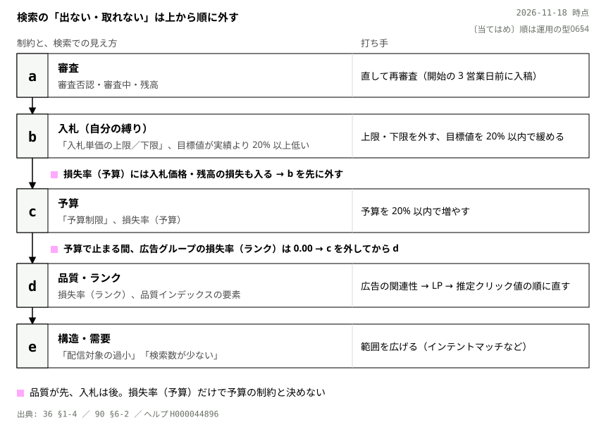
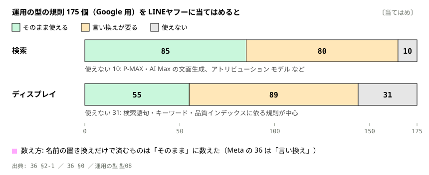

[ LINEヤフー / 36 ]
36運用の型の LINEヤフーへの当てはめ
位置づけ: Google の運用の型（規則 175 個）から見た違いの表。この媒体の運用の型は 28_運用の型.md（LINEヤフーの公式の推奨から作った）を先に読む。 ここでの結論の多くは〔当てはめ〕で、LINEヤフーが勧めていることではない。28 と食い違う所（ディスプレイの始め方、マッチタイプ違いの重複、損失率（予算）の線、面の除外、キーワード追加の頻度）は 28 §12 に書いた。以下は元の位置づけ: ../Google広告の基礎/運用の型/（以下「運用の型」。章は 型04§6、規則は `規換-
このメモについて
- 確認日: 2026-11-18（LINEヤフー側の事実は同じフォルダの
00・02・04・06・23・61・94・96とrules.csvから取った。新しく取得したのはヘルプ 7 本〔本文、アプリ内のブラウザの自分専用タブで閲覧〕: A/B テスト 3 本〔検索 H000053491・H000053492、ディスプレイ H000044211〕、インプレッ… - 位置づけ: Google の運用の型（規則 175 個）から見た違いの表。この媒体の運用の型は
28_運用の型.md（LINEヤフーの公式の推奨から作った）を先に読む。 ここでの結論の多くは〔当てはめ〕で、LINEヤフーが勧めていることではない。28 と食い違う所（ディスプレイの始め方、マッチタイプ違いの重複、損失率（予算）の線、面の除外、キーワード追加の頻度）は 28 §12 に書… - 検索とディスプレイを分けて書く。 LINEヤフーの検索広告は仕組みが Google 検索にかなり近く、ディスプレイ広告（旧 YDA、2026-10-26 に LINE 広告を統合）は人と面で配る点で Meta に近い面がある。アカウントもタグも別系統なので（
00§0）、ほとんどの表に「検索」「ディスプレイ」の 2 列を置く - 使い方: 確認日から 30 日を過ぎていたら、LINEヤフー側の事実は各章（
00など）と95の出典を取り直してから使う - 凡例: ✓ 公式で確認 ／ △ 資料によって食い違う ／ ? 確認できず
地図
本文
0.先に結論（10 行）
- 01
運用の型の骨組み（6 工程の輪、3 つの時間の輪、時間の 3 条件、9 状態、7 段の順序、修理と実験）は LINEヤフーでもそのまま使える。検索は Google の数字までかなりそのまま通る。ディスプレイは件数・表示・調整率の読み方を直す〔当てはめ〕
- 02
検索の件数の線は Google とほぼ同じ: 自動入札の推奨は「設定後 1 か月以上で 30 件」（広告費用対効果の目標値は 50 件）、価値系の使い始めは「過去 30 日にアカウントで 15 件」✓（LY-入札-011〜013）。運用の型の閾04（30 日 30 件、tROAS 50 件）と閾22（15 件）がそのまま当たる。ディスプレイは「目標値あり」でキャンペーン単位 30 日 40 件 ✓（LY-入札-028）で、閾04 を 40 件に読み替える
- 03
学習の表示の意味が検索とディスプレイで違う。検索は「入札戦略の学習中（4 つの理由）／学習完了」で日数の記載が無い ?（LY-学習-006）。ディスプレイは「学習中／学習停止／学習完了」で、学習中が 7 日以上続いたら見直しが公式の線 ✓（LY-学習-003）。どちらも「表示が消えた＝判定してよい」ではない（規時-05 のまま）
- 04
検索では、キーワード・広告グループ・キャンペーンの追加と、止めていたキャンペーンの再開でも学習が起きる ✓（
02§4-1、H000046547）。Google の「予算・目標値・広告文の変更では学習中にならない」と同じ感覚でキーワードを毎日足すと、学習が続く。検索クエリーからの追加は週 1 回に束ねる〔当てはめ〕 - 05
オークションランクにコンバージョン率は入らず、品質インデックスは完全一致を前提に算出し、マッチタイプも対象外キーワードも反映しない ✓（LY-オークション-003・011）。運用の型の「品質が先、入札は後」は検索でそのまま使えるが、品質インデックスをマッチタイプの整理で上げようとしない
- 06
175 個の規則のうち、検索はそのまま 85／言い換え 80／使えない 10、ディスプレイはそのまま 55／言い換え 89／使えない 31（§2-1 の集計、スクリプトで数えた）。検索で使えないのは P-MAX・AI Max の文面生成と最終ページ URL の拡張・アトリビューション モデル・値のルール・コンバージョン調整・推奨目標値に依る規則、ディスプレイで使えないのは検索語句・キーワード・品質インデックスに依る規則が中心
- 07
検索のインプレッションシェア損失率（予算）は Google と中身が違う: 「1 日の予算」だけでなく「キーワードや広告グループの入札価格、アカウント残高」が原因の損失も入る。しかも 1 日の予算が原因の損失があると、広告グループの損失率（ランク）は 0.00 と出る ✓（H000044896、この章で本文を取得）。制約 b（入札）と c（予算）を損失率だけで分けない〔当てはめ〕。ディスプレイの損失率は表示回数 10 万以上か表示機会 100 万以上のときだけ出る推定値で、損失率（予算）は「キャンペーンの 1 日の予算が不足」による損失だけ（入札価格・残高は入らない）。広告グループ単位では損失率（予算）を見られない ✓
- 08
予算の線: 1 日は日予算の 200%（検索・ディスプレイとも）、月は検索が日予算 × 30.4、ディスプレイが日予算 × その月の掲載日数（配信オフの日も数える）✓（LY-予算-001・003・012・014）。閾27（2 倍に 2 日）と規換-20 の 30.4 は検索ではそのまま、ディスプレイでは月の式を直す
- 09
Google と数字を比べる前に 3 つをそろえる: ①計上日（LINEヤフーは「最後のクリックの日」、Google はクリック日。GA4 は発生日）、②推定コンバージョンは合算され、抜き出しも除外もできない（検索は 2025-10-22 から）✓（LY-計測-009、
06§7）、③計測期間（1〜90 日を設定ごとに。Google の既定 30 日と違う値かもしれない）。検索にはアトリビューション モデルを選ぶ機能が見当たらない ?（LY-計測-016） - 10
Google から移す・併用するときの近道は公式にある: キャンペーンエディターが Google 広告エディターの CSV（UTF-16LE）を読み込める（キャンペーンタイプの値だけ直す。本文で確かめたのは検索広告のエディターだけで、ディスプレイは ?。インポートの入札戦略の値の一覧にコンバージョン数の最大化が無い △、
60§2・§10）✓（04§10-1）。直すのは主に 5 か所: 入札戦略の名前（目標コンバージョン単価 →「コンバージョン数の最大化＋目標値」）、RSA の本数（公式は広告グループに 1 本）、対象外キーワードの言い換え（除外に類似パターンが効かない）、クイックリンクの自動作成（既定オン）、審査の 3 営業日〔当てはめ。各点の事実は §4〕
1.運用の型の各章は LINEヤフーで何に当たるか（対比表）
- 自動入札では調整率が一切効かない
- A/B テストは信頼区間や有意性を画面で示すとは書かれていない
- 検索は止めたキャンペーンを再開すると「学習中（新しい入札戦略）」に入る
- 「見る頻度」と「触る頻度」を分ける
- 触る時刻
- 停止していたキャンペーンの再開
| 運用の型の章 | 原理（Google で書かれた形） | LINEヤフー 検索 | LINEヤフー ディスプレイ | 運用の判断への効き方 |
|---|---|---|---|---|
| 型01 運用型広告とは何か | 競り・可変・帰還。内側の輪は機械、外側は人 | 同じ。引き金は検索クエリーと登録キーワード（2026-09-14 から検索クエリーマッチングでキーワード無しでも出うる ✓ LY-キーワード-009） | 引き金は人・面・文脈。スマートターゲティングで機械が人を選ぶ ✓（23§7） | 検索は Google の型をそのまま、ディスプレイは「囲う」が痩せる前提で読む |
| 型02 目的関数 | BE ＝ g × q × ι、平均と限界 | そのまま | そのまま。ι（増分率）はリターゲティング・LINE 友だちへの配信で小さくなりやすい〔推測〕 | 目標値は事業の数字から置く。媒体の推奨値からは置かない |
| 型03 制御の輪 | 6 工程、事故・改善・目的の 3 つの輪 | そのまま | そのまま。ただし改善の 1 周は「40 件／30 日」と「7 日の見直し線」に縛られる | §1-1 |
| 型04 時間の法則 | 学習・遅れ・振れ・周期、W・L・P | 学習の日数は非公開。遅れはクリック日計上で Google と同じ形。件数の線も同じ | 学習中 7 日が見直し線、目標値は 7 日で寄り 2 週間で ±20%（公式） | §1-2 |
| 型05 操作できるもの | 6 類（教える・渡す・囲う・換える・束ねる・事業） | 6 類とも Google に近い。調整率が効く範囲は Google のスマート自動入札とほぼ同じ | 囲うが「リストの OR」と「スマートターゲティングの漏れ」で緩む。自動入札では調整率が一切効かない | §1-3 |
| 型06 状態の判定 | 9 状態、8 つの問い、制約 a〜e | 「入札戦略の状況」と損失率で読める（損失率（予算）の中身に注意） | 学習状況・コンバージョン設定状況・面の内訳で読む。損失率は規模が大きいときだけ | §1-4 |
| 型07 優先順位 | 計測 → 定義 → 絞る → 素材 → 構成 → 入札・予算 → 広げる | 同じ順 | 同じ順。「絞る」の道具がプレイスメントとリストに限られる | 計測は検索とディスプレイで別に点検する |
| 型08 判断の規則 | 175 個 | §2 で 1 つずつ（そ 85／言 80／✕ 10） | §2 で 1 つずつ（そ 55／言 89／✕ 31） | 検索は「言い換え」の多くが名前の違いと件数の小さな違い |
| 型09 段階ごとの型 | 始める・立ち上げる・最適化・広げる・仕組みにする | 同じ。立ち上げで「審査 3 営業日」と「キーワード追加の学習」を足す | 同じ。「40 件」に届くまでは目標値なしか拡張クリック単価 ✓（02§3-2） | §4 |
| 型10 問題解決 | 届かない・急に変わった・頭打ち | 「急に変わった」の候補に LINEヤフー固有の日付（推定コンバージョンの合算 2025-10-22、上部以外の位置の変更 2026-07-15、検索クエリーマッチング 2026-09-14、クイックリンク自動作成 2026-09-16）を足す | 同じく（LINE 広告の終了 2026-10-26、Agent i の面 2026-07-23、リストの下限 100 人 2026-11-10） | §3-4 |
| 型11 判断の質 | 仮説の 1 枚、3 区分の判定 | そのまま。A/B テストは信頼区間や有意性を画面で示すとは書かれていない ?（H000053492）ので、区間は運用の型の式で自分で出す | 同じ（H000044211） | §6 |
| 型13 LP を輪に載せる | 修理か実験か、門 3 | そのまま。LP は品質インデックスの要素で、検索クエリーマッチングの判断材料でもある ✓（LY-キーワード-009） | そのまま。LP も審査の対象 ✓（00§10-1） | LP の変更後は検索クエリーの広がり方も見る（規材-15） |
1-1.制御の輪（型03）を LINEヤフーで回す
| 事故の輪（毎日） | 改善の輪（週 1 回決め、判定は W ごと） | 目的の輪（四半期） | |
|---|---|---|---|
| 検索で毎日読めるもの | 配信状況（審査否認・「有効（設定が不適切）」）、表示回数、費用（日予算の 200% 以内か）、コンバージョン数の急変、アカウント残高 | 確定した W の CPA・件数、入札戦略の状況（学習中の理由・制限の種類）、損失率（予算・ランク）、品質インデックスの要素、検索クエリーレポート（マッチタイプ列） | 台帳、q・g・ι、計測期間と「自動入札への利用」の見直し |
| ディスプレイで毎日読めるもの | 審査否認、表示回数、費用、コンバージョン設定状況（タグの不備・過去 7 日の実績の有無 ✓ 00§11-2）、リストの警告（データ連携の停止） | 確定した W の CPA・件数、学習状況（キャンペーンエディター）、面の内訳（配信先 URL レポート）、スマートターゲティングの有無 | 同上。加えて面ごとの採算（LINE・Yahoo!・提携先・Agent i） |
| 許される行動 | 止める・戻す・直す。検索は止めたキャンペーンを再開すると「学習中（新しい入札戦略）」に入る ✓（H000046547）ので、主力の停止は門 1 の事故のときだけ | 1 キャンペーン・1 W に実験 1 つ。修理は 1 日に束ねる | 目標値・成果の定義・構成の見直し |
（型03§4-3）は同じ。ディスプレイは公式が「7 日をめどに CPA を見て調節、挙動が 2 週間ほど続いたら ±20%」と書く ✓（LY-入札-029・031）ので、週次で見て 2 週に 1 回触るのが公式と運用の型の両方に合う〔当てはめ〕
検索は通常、日予算の約 50% を午前に使う ✓（02§8-1）。予算の変更は朝に入れると、その日の配分に素直に効く〔当てはめ〕。ディスプレイでその日の消化より低い日予算にすると、その日の配信は止まり翌日再開 ✓（LY-予算-015）
改善の輪 1 回の最短は運用の型と同じ W ＋ L ＝ 21 日（W 14 日、L 7 日のとき）。ディスプレイで目標値ありの広告は「7 日で寄る」ので、最初の 7 日は過渡として読む〔当てはめ〕
1-2.時間の法則（型04）を LINEヤフーで読む
4つの源の LINEヤフー版
| 源 | 運用の型 | 検索 | ディスプレイ |
|---|---|---|---|
| 学習 | 「学習中」の表示（最長 7 日）と過渡を分ける | 「有効（入札戦略の学習中）」の 4 つの理由: 入稿アイテムの変更／コンバージョン設定の変更／新しい入札戦略（新規作成・停止していたキャンペーンの再開）／入札戦略の変更 ✓（H000046547）。日数は ?。学習データ除外を過去の期間に入れると約 1 週間で再学習 ✓（LY-学習-007） | 学習中／学習停止（学習中に配信オフ）／学習完了。広告管理ツールは「学習中」だけを出す。目標値ありは CV 数の急変でも学習中 ✓（LY-学習-001・002・004）。スマートターゲティングにも数日の学習があり、状況は見られない ✓（LY-学習-011） |
| 遅れ | 直近 L 日は必ず悪く見える | 計上はきっかけのクリックの日（複数なら最後のクリックの日）✓（LY-計測-005）。計測期間 1〜90 日の間、過去の日の件数が増え続ける。Google と同じ形 | クリック経由は同じ。ビュースルーは 24 時間固定でビューの日に計上、「コンバージョン数」には入らない ✓（LY-計測-026・027） |
| 振れ | 15.7 ÷ δ²、30 件で ±36% | 同じ（数学）。単位はキャンペーン（推奨件数がキャンペーン単位 ✓） | 同じ。単位はキャンペーン（戦略がキャンペーンに 1 つ ✓ LY-入札-026） |
| 周期 | 7 日の倍数、季節 | 同じ。1 日は日本時間 0:00〜23:59 ✓ | 同じ |
| （第 5 の源）仕様の変化 | 型06 の状1 に回す | 推定コンバージョンの合算（2025-10-22〜、抜き出し不可 ✓）、上部以外の広告の位置の変更（2026-07-15〜、表示回数・クリック数が増える傾向と公式 ✓ LY-オークション-015）、検索クエリーマッチング（2026-09-14〜）、クイックリンク自動作成（2026-09-16〜、既定オン ✓） | 推定コンバージョンの合算（2023-02-27〜）、LINE 広告の終了と面の統合（2026-10-26）、Agent i の面（2026-07-23〜）、5 種のリストの下限 100 人（2026-11-10〜）✓（00§6-2） |
過渡の大きさ（閾32）を LINEヤフーの「学習の引き金」で置き直す
| 変更 | LINEヤフーの公式の扱い | 運用の型の過渡に直すと〔当てはめ〕 | 待つ期間〔当てはめ〕 |
|---|---|---|---|
| キャンペーンの新規作成（検索・ディスプレイ） | 学習中（新しい入札戦略） ✓ | 大 | 7 日 ＋ W |
| 入札戦略の変更 | 学習中（入札戦略の変更） ✓ | 大 | 7 日 ＋ W |
| コンバージョン設定の変更（検索。「自動入札への利用」、コンバージョングループを含む） | 学習中（コンバージョン設定の変更） ✓ | 大（教える類の変更） | 7 日 ＋ W。前後比較は台帳で |
| キーワード・広告グループの追加（検索） | 学習期間が生じる ✓（H000044791） | 足す量が取るオークションの 1 割未満なら小、それ以上は中〔当てはめ〕。Google では「学習中」にならない種類 | 週 1 回に束ね、束の日から W |
| 停止していたキャンペーンの再開（検索） | 学習中（新しい入札戦略） ✓ | 大 | 再開から 7 日 ＋ W |
| 配信オフ（ディスプレイ、学習中に止めた） | 学習停止 ✓ | 再開後は学習の続きから〔推測〕 | 再開から W |
| 目標値の変更（検索） | 「入稿アイテムの変更」に入るかは記載が無い ? | 閾32 の割合（1 割未満 小／2 割以下 中／超 大）をそのまま | 同じ |
| 目標値の変更（ディスプレイ） | 「7 日で寄る」、2 週間見て ±20% ✓ | ±20% 以内は中 | W（14 日）。公式の 2 週間と一致 |
| 予算額 | 学習の引き金としての記載は無い ? | 閾32 の割合をそのまま | 同じ |
| 広告（RSA のアセット）の変更 | 「入稿アイテムの変更」に入りうる（キャンペーンと配下の設定を変えた）✓ | 小〜中。公式は RSA を短期間で止めないよう勧める ✓（04§8-2） | W |
| 学習データ除外を作る（過去の期間） | 約 1 週間で再学習、その間は入札とコストが一時的に下がりうる ✓ | 中（教師の一部の入れ替え） | 1 週間 ＋ W。週次の報告に注記 |
| スポット調整の期間 | 期間中は変動率を想定して入札 ✓（02§6-1） | 期間中は状8 | 期間 ＋ L |
| スマートターゲティングのオン（ディスプレイ） | 数日の学習、状況は見えない ✓ | 中〜大（取るオークションが入れ替わる） | 7 日 ＋ W |
| 移行ツールでの LINE 広告からの移行 | 学習は引き継がれない ✓（LY-学習-012） | 大（新規と同じ） | 7 日 ＋ W。移行直後の成果で良し悪しを決めない |
W・L・P の LINEヤフーでの値〔当てはめ〕
評価窓 W ＝ max（2 × C, 14 日）を 7 日の倍数に切り上げ（閾02 のまま。検索・ディスプレイとも） ディスプレイの公式の「2 週間ほど続いたら ±20%」は W ＝ 14 日と同じ長さ 直近から除く日数 L ＝ max（5 日, 成果の 90% が出そろう日数）。不明なら 7 日（閾03 のまま） 検索・ディスプレイとも計上はクリックの日なので、Google と同じ式で足りる。 推定コンバージョンが後から合算されるかの時間の情報は無い ? ので、不明なら 7 日のまま 判定期間 P ＝ max（W, 確定した件数が線に届く日数）を 7 日の倍数に切り上げ 線: 検索 ＝ 30 件（広告費用対効果の目標値は 50 件。単位はキャンペーン） ディスプレイ ＝ 40 件（目標値ありの推奨。単位はキャンペーン。価値の最大化のヘルプは広告グループ単位と書く △、16§8-2）
- 検索の「設定後 1 か月以上の期間に 30 件」（LY-入札-011）は、運用の型の「30 日で 30 件」（閾04）と同じ値。Google の運用の型の数字を検索ではそのまま使ってよい〔当てはめ〕
- ディスプレイの 40 件は「目標値ありで安定させる」ための推奨で、評価の件数の線として公式が書いたものではない。運用の型の P の線に借りるのは〔当てはめ〕。目標値なし・拡張クリック単価のキャンペーンの評価は 30 件のままでよい〔当てはめ〕
1-3.操作できるもの（型05）の 6 類を LINEヤフーで埋める
| 類 | 検索の主な操作 | ディスプレイの主な操作 | Google との差 |
|---|---|---|---|
| 教える（教） | コンバージョン設定（ウェブ・電話・アプリ・インポート、1 アカウント 1,000 件）、「自動入札への利用：する／しない」、キャンペーン単位の「発生元と目的」か「コンバージョングループ」（グループに入れると「しない」でも入札に使われる ✓ LY-計測-008）、計測期間 1〜90 日、計測方法（毎回／初回のみ）、1 コンバージョンあたりの価値、学習データ除外 | 計測タグのイベント、「コンバージョン列に含める」、キャンペーンの「最適化に使用するコンバージョン」（LY-入札-027）、計測期間、計測方法、価値（小数点以下 2 桁） | メイン／サブの代わりに「自動入札への利用」。考え方は近い〔推測〕（00§0-2）。アトリビューション モデルの選択は見当たらない ? |
| 渡す（材） | RSA（タイトル 3〜15・30 文字、説明文 2〜4・90 文字、全角 2 文字換算。広告グループに 1 本を推奨 ✓ 04§8）、広告表示アセット（クイックリンク・テキスト補足・カテゴリ補足・画像・電話・ビジネス名）、LP | レスポンシブ（画像 3 比率、主体者表記が必須）、バナー、カルーセル、動画、LP | 生成 AI は「提案」まで（月 30 回）で、配信時に文面を作らない ✓（00§7-3）。クイックリンクは何もしなければ自動で付く ✓ |
| 囲う（囲） | キーワード・マッチタイプ（3 種、フレーズ一致は語順を問わない ✓ 04§0）、対象外キーワード（類似パターンが効かない）、検索クエリーマッチングのオン・オフ、地域・曜日時間帯・デバイス・ネットワーク（提携パートナー）、オーディエンスリスト、年齢・性別リスト（取引実績のあるアカウントだけ） | オーディエンスリスト（同じ種類の中は OR）、プレイスメント（面を指定する唯一の手段）、コンテンツキーワード（LINE の面には効かない）、地域・年齢・性別・デバイス・OS、スマートターゲティング（リストを付けるとリストの外にも出る） | 検索はほぼ Google と同じ。ディスプレイは「付けたつもりで広がる」仕組みが 2 つ（OR とスマートターゲティング）あり、囲う力が Google のディスプレイより弱い〔当てはめ〕 |
| 換える（換） | 戦略 5 つ（個別クリック単価・クリック数の最大化・CV 数の最大化〔目標値は任意〕・CV 価値の最大化〔目標値は任意〕・ページ最上部掲載）、ポートフォリオ（目標値の 2 型・クリック数・最上部）、入札価格調整率（効くのはクリック数の最大化の全部と、CPA 目標値のデバイスだけ）、スポット調整、日予算・共有予算 | 戦略 10 種（キャンペーンに 1 つ）、目標値、ポートフォリオ、共有予算、調整率（手動系だけ。自動入札・拡張クリック単価では一切効かない ✓ 02§7-2） | 検索の調整率の効き方は Google のスマート自動入札と実質同じ ✓（02§7-3）。ディスプレイは Google と違って手動の調整率が残る |
| 束ねる（束） | キャンペーン（1 アカウント 100 個まで ✓）、広告グループ、ポートフォリオ＋共有予算（同じ共有予算なら同じポートフォリオにしないと「設定が不適切」✓） | キャンペーン、ポートフォリオ（CV 最大化も入れられる）、共有予算（1 つに 1,000 キャンペーン） | 検索の CV 数・価値の最大化はポートフォリオに入らない ✓（LY-入札-003）。目標値なしの最大化は共有予算に入れられない ✓（02§8-3） |
| 事業を変える（外） | 同じ | 同じ | 同じ |
委任のスイッチ（型05§4）の LINEヤフー版
| スイッチ | 任せる類 | 任せたあと人に残る制御 | 任せる前の前提〔当てはめ〕 |
|---|---|---|---|
| CV 数・価値の最大化（検索） | 換える | 目標値（任意）、予算、教える類、デバイス −100% | 「自動入札への利用：する」が 1 つ以上 ✓。月 30 件の見込み |
| インテントマッチ（検索） | 囲う（類義語・関連語への拡張） | 対象外キーワード、マッチタイプ | CV 系の自動入札と組む（公式の推奨 ✓ LY-入札-024） |
| 検索クエリーマッチング（検索） | 囲う（キーワード無しでも配信） | キャンペーン・広告グループ単位のオン・オフ、対象外キーワード、RSA と LP の中身（判断材料） | 計測が正しく、CV 系の自動入札で月 30 件、広告文と LP がテーマに絞れている（§4-3） |
| クイックリンクの自動作成（検索） | 渡す（クイックリンク） | アカウント設定のチェック、配信設定の変更と削除だけ ✓ | 規制業種は既定オンのまま放置しない |
| スマートターゲティング（ディスプレイ） | 囲う（人の選び方） | 地域・年齢・性別・デバイス・曜日時間帯・プレイスメント・コンテンツキーワードの範囲、除外リスト ✓ | リストの効果を測りたい広告グループでは使わない〔推測〕（00§6-2） |
| 共有予算・ポートフォリオ（両方） | 換える・束ねる | 共有予算の総額、ポートフォリオの目標値 | 同じ目的・同じ目標値。A/B テストの対象にしない ✓（H000053491、H000044211） |
| 最適化提案（両方） | — | 採否は人 | 採否の基準は運用の型と同じ〔推測〕（00§11） |
1-4.状態の判定（型06）を LINEヤフーの表示で読む

LINEヤフーの検索は Google の制約の順がほぼそのまま使えるが、b と c の境目と、c と d の見え方がずれる。予算を足す前に入札の縛りを外し、ランクの損失は予算の制約を外してから読む。
出典: 36 §1-4・90 §6-2・LY-ポリシー-001 ほか 4 件 · 2026-11-18 時点
表示 → 状態の対応
| 表示・事実 | どちら | 何を言っているか（公式） | 運用の型の状態〔当てはめ〕 | まず確かめること |
|---|---|---|---|---|
| 審査否認・審査中が長い | 両方 | 新規の広告は配信開始まで 3 営業日前後 ✓（00§10-1） | 状0（主力なら）、制約 a | 否認理由、LP の認証（ID・パスワードのページは審査できない） |
| 表示回数がほぼ 0、予算が残る | 両方 | — | 状0 か、状3 の中の点検（閾37） | 配信状況、残高、「検索数が少ない」（キーワード）、オーディエンスのユーザーサイズ（100 人以上） |
| 「有効（設定が不適切）コンバージョン設定」 | 検索 | CV 設定が不適切。共有予算を使いポートフォリオを使っていないときにも出る ✓（H000046547） | 状1 の疑い。ただし先に共有予算とポートフォリオの組み合わせ | §3 の D3 |
| コンバージョン設定状況の不備 | ディスプレイ | タグの不備・過去 7 日の実績の有無 ✓ | 状1 | 計測タグのイベントのテスト |
| 「有効（入札戦略の学習中）」 | 検索 | 4 つの理由のどれか ✓ | 状8 | 理由（入稿アイテム／CV 設定／新しい戦略／戦略の変更）と日付 |
| 「学習中」が 7 日以上 | ディスプレイ | 見直しを勧める（配信量・絞りすぎ・予算・CV 数・目標値・価値）✓ | 状3 か状4 の制約 b（状8 のまま待たない） | 規換-19 の重なり。続くなら拡張クリック単価への変更も公式の案 ✓ |
| 「有効（入札戦略に制限あり）予算制限」 | 検索 | 1 日の予算が低い ✓ | 制約 c の候補（CPA が目標内なら状6、超えるなら状5） | 損失率（予算）。入札価格・残高の損失も含むので、先に上限・下限の制限が出ていないか |
| 「入札単価の上限／下限」 | 検索 | 上限が低い／下限が高すぎる ✓ | 制約 b | ポートフォリオの上限・下限（付けないのが推奨 ✓ LY-入札-006） |
| 「配信対象の過小」 | 検索 | 配信数が少ない。ターゲティングの調整・キーワードの追加を ✓ | 状3（範囲が狭い）か制約 e | 規換-19。ただしキーワードの追加は学習の引き金 |
| キーワードの「検索数が少ない」 | 検索 | 掲載されにくい。待つか代わりの語を ✓（04§3-3） | 状3 の一部 | 規囲-14 |
| 損失率（ランク）が高い | 両方 | 掲載順位（オークションランク）が原因 ✓ | 制約 d | 品質インデックスの要素（検索）、素材と LP（ディスプレイ） |
| 品質インデックスの要素に「平均より下」 | 検索 | 参考値。完全一致前提 ✓ | 状5 の中の切り分け | 規材-01〜05 |
| 目標値が直近 7 日の CPA より大きく低い | ディスプレイ | 配信されないことがある ✓（LY-入札-030） | 制約 b | 規換-09 |
| 最適化提案 | 両方 | 配信を増やす方向の提案が多い〔推測〕 | どの状態の根拠にもしない | — |
決定木の問いの LINEヤフーでの読み替え〔当てはめ〕
| 問い（型06§2） | Google での基準 | 検索 | ディスプレイ |
|---|---|---|---|
| 問 0 出ているか | 過去 7 日の表示 0、不承認・支払い停止 | 同じ。加えてアカウント残高、月の請求限度額への到達（掲載が止まる ✓） | 同じ。加えて月の請求限度額（掲載期間 × 日予算）への到達、リストのデータ連携の停止（100 日表示が無いと止まる ✓ 23§0） |
| 問 1 計測は信用できるか | テスト・2 経路・台帳の比・異常値 | テスト（成果ページでコンバージョン測定タグが 1 回動くか、yclid が付いて残るか）、台帳の比、異常値。検索の CV API とタグの重複の基準は書かれていない ?（06§5）ので、2 経路にするなら小さな件数で確かめる | 計測タグのテスト、transactionId での重複除外（7 日）、旧タグとの二重計測（「全て」の列で重複しうる ✓ LY-計測-033 はショッピングの記述） |
| 問 2 教える中身は利益につながるか | メインの成果・値・目標 | 「自動入札への利用：する」の中身、コンバージョングループの中身（「しない」も入る）、価値 | 「最適化に使用するコンバージョン」の中身、価値 |
| 問 3 過渡の最中か | 中の変更から W、大から 7 日 ＋ W | §1-2 の表。キーワード・広告グループの追加と再開を足す | §1-2 の表。目標値は 7 日で寄る |
| 問 4 件数は足りるか | 確定 30 日で 30 件（tROAS 50 件） | 同じ（30 件、ROAS 50 件。キャンペーン単位） | 40 件／30 日（目標値ありのとき。キャンペーン単位。価値の最大化は広告グループ単位 △） |
| 問 5 効率は目標内か | 確定 CPA ＞ T、区間で確定／疑い | 同じ | 同じ。ビュースルーは「コンバージョン数」に入らないので CPA にも入らない ✓ |
| 問 6 量は計画どおりか | 件数か費用が計画の 90% 未満 | 同じ。月の計画は日予算 × 30.4 | 同じ。月の計画は日予算 × その月の掲載日数 |
| 問 7 足す先と採算 | 損失率（予算）＋（ランク）≧ 10% | 使える。ただし損失率（予算）には入札価格・残高の損失も入る ✓（H000044896） | 損失率は表示回数 10 万以上か機会 100 万以上のときだけ出る推定値 ✓（H000044406）。損失率（予算）は 1 日の予算の不足だけで、広告グループ単位では見られない ✓（同）。小さいアカウントは「予算を使い切っているか」で代える |
制約の特定（型06§4）の LINEヤフー版〔当てはめ〕
| 順 | 制約 | 検索での見え方 | ディスプレイでの見え方 | 打ち手 | 打ってはいけない手 |
|---|---|---|---|---|---|
| a | 審査 | 審査否認、審査中、残高 | 同じ。面ごとの掲載制限 ✓（00§10-2） | 直して再審査。開始日の 3 営業日前に入稿 | 入札・予算を上げる |
| b | 入札（自分の縛り） | 「入札単価の上限／下限」、目標値が実績より 20% 以上低い（閾14） | 学習中が 7 日以上、目標値が直近 7 日の CPA より過度に低い | 上限・下限を外す（推奨は付けない ✓）、目標値を 20% 以内で緩める（ディスプレイは公式も約 +20% ✓） | 予算を上げる |
| c | 予算 | 「予算制限」、損失率（予算）。上の b が出ていないことを先に確かめる（損失率（予算）に入札価格の損失が混ざるため） | 予算を使い切り、CPA は目標内 | 予算を 20% 以内で増やす（閾08） | 目標値を緩める |
| d | 品質・ランク | 損失率（ランク）、品質インデックスの要素 | 損失率（ランク）（出るときだけ）、クリック率・成果率 | 広告の関連性・LP・推定クリック値の順に直す。品質をやり切ってから入札（「品質が先、入札は後」） | 入札だけを上げる |
| e | 構造・需要 | 「配信対象の過小」「検索数が少ない」、損失率の合計が 10% 未満 | リストが小さい・OR で薄まる・面が狭い | 範囲を広げる（インテントマッチ・検索クエリーマッチング／スマートターゲティング・類似） | 予算を上げる |
- 検索の制約の特定は、Google の型06§4 をほぼそのまま使える。違いは c と b の境目: LINEヤフーの損失率（予算）は「キャンペーンの 1 日の予算、キーワードや広告グループの入札価格、アカウント残高」が原因の損失の割合 ✓（H000044896）で、Google の「予算が原因」より広い。手動入札の低い入札価格でも「予算」の損失に見えうる〔当てはめ〕
- さらに「1 日の予算が原因で損失率（予算）が出ていると、広告グループの損失率（ランク）は計測されず 0.00」✓（同）。予算で止まっている間は、ランクの損失を広告グループの列で読めない。予算の制約を外してから d を見る〔当てはめ〕
2.運用の型の規則としきい値を LINEヤフーに当てはめる
- ＝そのまま使える（同じ仕組みがあり、名前の違いは
00§0-2の用語対応表で読み替えるだけ。数字も行動も変えない）／ - ＝言い換えが要る（数字・単位・手順・前提を LINEヤフーのものに置き換えれば使える）／
- 名前の置き換えだけで済むものは「そ」に数えた
- 着地 URL に yclid が残るか
- 重複の判定基準が書かれていない
- コンバージョングループに入れていると「しない」でも入札に使われる
2-1.規則（型08 の 175 個）

LINEヤフーの検索は Google の型の半分ほどがそのまま通り、ディスプレイは言い換えと使えないものが増える。検索は Google の数字のまま、ディスプレイは件数・表示・調整率の読み方を直して使う。
出典: 36 §2-1・36 §0・Google広告の基礎/運用の型/08 ほか 1 件 · 2026-11-18 時点
区分: そ＝そのまま使える（同じ仕組みがあり、名前の違いは 00§0-2 の用語対応表で読み替えるだけ。数字も行動も変えない）／言＝言い換えが要る（数字・単位・手順・前提を LINEヤフーのものに置き換えれば使える）／✕＝使えない（前提の仕組みが無い。代わりの手を書く）。Meta の 36 は道具の名前が違うだけでも「言」にしたが、LINEヤフーの検索は名前の対応が一対一のものが多いので、名前の置き換えだけで済むものは「そ」に数えた（数え方の違いとして明記する）。区分と書き換えはすべて〔当てはめ〕。事実の出典は右端の id か節。1 行 1 規則で並べ、スクリプトで数えた（§2-1 の末尾）。
規計（計測・教える類の信頼性）16 個
| 規則 | 検索 | ディスプレイ | LINEヤフーでの形 | 根拠 |
|---|---|---|---|---|
| 規計-01 | 言 | 言 | テスト送信は、成果ページでコンバージョン測定タグ（ディスプレイは計測タグのイベントスニペット）が 1 回動くかを GTM のプレビューやブラウザーの開発者ツールで見る。Tag Assistant に当たる公式の道具は知識ベースに無い ?。検索は着地 URL に yclid が残るかも同時に見る（リダイレクトで落ちる） | LY-計測-001・002、06§3-3 |
| 規計-02 | 言 | 言 | 検索の 2 経路はタグ＋検索用 CV API。重複の判定基準が書かれていない ?ので、両方を本線にする前に小さな件数で二重計上を確かめる。ディスプレイは transactionId で 7 日間の重複除外があるので鍵をそろえる。同じ成果を旧タグと計測タグで並べて測らない | 06§5-2、LY-計測-021 |
| 規計-03 | そ | そ | 台帳との比 ±20%。比が折れた日を、推定コンバージョンの合算開始（検索 2025-10-22）、自動タグ設定のパラメーター追加（2026-10-15）、タグの貼り替えと突き合わせる | 06§7、LY-計測-003 |
| 規計-04 | 言 | 言 | 「コンバージョン数」と「コンバージョン数（全て）」を設定別に並べる。軽い行動は「自動入札への利用：しない」（ディスプレイは「コンバージョン列に含める」を外す）。コンバージョングループに入れていると「しない」でも入札に使われるので、グループの中身も見る | LY-計測-007・008、06§9 |
| 規計-05 | 言 | 言 | 止血の合図: 検索は配信状況「有効（設定が不適切）コンバージョン設定」（ただし共有予算×ポートフォリオ無しでも出る）、ディスプレイは「コンバージョン設定状況」（タグの不備・過去 7 日の実績なし） | H000046547、00§11-2 |
| 規計-06 | 言 | ✕ | 検索: 自動入札の学習データ除外（最大 14 日、1 アカウント 500 件、CV 系 4 戦略だけ）。期間は成果までの日数だけ手前から（ヘルプも「CV まで 2 日なら 2 日前から」）。過去の期間に入れると約 1 週間の再学習で入札とコストが一時的に下がる。誤りでない限り消さない。ディスプレイ: 同じ機能は見当たらない ?。事故の期間は判定と報告から外して注記 | 02§6-2、LY-学習-007〜010 |
| 規計-07 | そ | ✕ | 検索: 公式も「セールなどには使わずスポット調整を」と書く。考え方はそのまま。ディスプレイ: 機能が無いので場面が無い | LY-学習-010 |
| 規計-08 | 言 | 言 | 「コンバージョンを待機中」に当たる検索の表示名は知識ベースに無い ?。ディスプレイはコンバージョン設定状況の「過去 7 日の実績の有無」。どちらも規計-01 のテストで発火を確かめ、発火すれば流入不足 | 00§11-2 |
| 規計-09 | そ | そ | 0 件が 3 ÷ λ 日続いたら計測の停止を疑う（閾28） | 型04§8 |
| 規計-10 | 言 | 言 | GA4 と合わないのは正常（計上日がクリックの日、推定の合算、帰属は自分のクリック）。「コンバージョン数（全て）」で日・キャンペーン別に比を取る。ディスプレイは「（クリック経由）」の列で比べ、ビュースルーと 10 秒以上の動画視聴後の成果を外して見る | 06§14-2、LY-計測-027 |
| 規計-11 | 言 | 言 | 計測の変更の一覧に、計測期間・計測方法・「自動入札への利用」・コンバージョングループ・発生元と目的の指定・計測タグへの貼り替えを入れる。検索は CV 設定の変更そのものが「学習中」の理由 | H000046547、06§4-2 |
| 規計-12 | 言 | 言 | 偏りの点検の順: 自動タグ設定（アカウントごと。sa_ 系も「設定する」のときだけ付く）→ yclid（_ly_c 等）の受け渡し（リダイレクト・短縮 URL）→ ローカルストレージの版のタグか → 1st party Cookie。同意を受け渡す項目はタグにも API にも無い ? | 06§0、06§13 |
| 規計-13 | ✕ | ✕ | コンバージョン調整（取り消し）に当たる機能の記述が無い ?。社内の操作が入った件数は台帳側で引いて注記。少量の検索キャンペーンでは、テスト送信を広告のクリック経由で行わない運用で防ぐ | — |
| 規計-14 | そ | そ | 価値の最大化・広告費用対効果の目標値では「1 コンバージョンあたりの価値」か、タグで値を送る。値が全件同じなら価値系を使わない | LY-入札-014、LY-計測-028 |
| 規計-15 | 言 | 言 | 検索のオフラインは「コンバージョンのインポート」（YSS で始まる yclid、発行から 90 日、CSV・Shift-JIS・20MB、広告管理ツールから）。ディスプレイは計測タグ用 CV API（event_time はリクエストの 90 日前まで）。抜けた日は再送 | 06§6、LY-計測-023 |
| 規計-16 | そ | そ | 計測期間は 1〜90 日で、7 日以上を推奨 ✓。最長 90 日は Google と同じ。ディスプレイのビュースルーは 24 時間固定で延ばせない | LY-計測-004・025・026 |
規定（目的・成果の定義・目標値）17 個
| 規則 | 検索 | ディスプレイ | LINEヤフーでの形 | 根拠 |
|---|---|---|---|---|
| 規定-01 | 言 | 言 | 「入札に使われている成果」＝検索は「自動入札への利用：する」の設定（キャンペーン単位の指定があればその中身）、ディスプレイはキャンペーンの「最適化に使用するコンバージョン」。書き出せるまで目標値と戦略を変えない | 06§4-2、LY-入札-027 |
| 規定-02 | 言 | 言 | サブへ移す → 「自動入札への利用：しない」（ディスプレイは最適化の対象から外す）。コンバージョングループの中にあると効かない点を確かめる | LY-計測-008 |
| 規定-03 | そ | 言 | 検索は 30 件／30 日がそのまま公式の推奨と一致。ディスプレイは目標値ありで 40 件／30 日を線にする。公式の使い分け図にもマイクロコンバージョンの言及がある ✓ | LY-入札-011・028、02§3-3 |
| 規定-04 | そ | 言 | 手前の成果を外す線: 検索は本来の成果が 30 件、ディスプレイは 40 件を超えたら。外す変更は CV 設定の変更（検索では学習中の理由）なので束ねて 1 回 | 同上 |
| 規定-05 | そ | そ | BE ＝ g × q × ι | 型02 |
| 規定-06 | そ | 言 | T ≦ β × BE。ディスプレイの初期値は公式の「直近 7 日の CPA」が基準で、それが β × BE を超えるなら目標値で合わせず状5 として素材・LP から | LY-入札-029・030 |
| 規定-07 | そ | そ | 業界平均・前任の値・Google 側の目標値で目標を置かない（Google から移すときは LINEヤフー側の実績から） | 02§5 |
| 規定-08 | そ | そ | q・g が 20% 動いたら BE を出し直す | — |
| 規定-09 | ✕ | ✕ | アトリビューション モデルを選ぶ機能が見当たらない ?。代わりに「計測期間」を変える場合を規計-11 として扱う。ディスプレイのモデル比較レポートは 2027-01-13 に終了予定 | LY-計測-016・029 |
| 規定-10 | そ | そ | CV 数の最大化（目標値あり／なし）では値は入札に効かない。値の差を効かせるなら価値の最大化へ | 02§2 |
| 規定-11 | ✕ | ✕ | Google の「値のルール」に当たる機能の記述が無い ?。差は 1 コンバージョンあたりの価値かタグの値で送る | — |
| 規定-12 | 言 | 言 | C が 30 日を超える成果は、検索はインポートで段階ごとに設定を分け、入札に使うのは 1 段階（「自動入札への利用」で選ぶ）。目的「有望な見込み客」「取引歴のある見込み客」はインポート専用 ✓ | 06§1、06§6 |
| 規定-13 | 言 | 言 | インポートの成果を入札に入れるのは 1〜2 サイクル安定してから。「自動入札への利用：する」に切り替える日は CV 設定の変更（学習中）として W を取り直す。Google の「tROAS は約 6 週間置かない」に当たる記述は無い ? | H000046547 |
| 規定-14 | 言 | 言 | 計測方法は「毎回」と「初回のみ」。リードは「初回のみ」に。既定値が作り方で違う（管理画面は「毎回」、API は ONE_PER_CLICK）△ので、一括作成した設定は必ず確かめる | LY-計測-006、06§9 |
| 規定-15 | そ | そ | 必要な成果率 r* が最良の区分を超えるなら目標値で届かせない。道は成果率・クリック単価（品質）・g | LY-オークション-003 |
| 規定-16 | そ | そ | β の置き直し。ディスプレイは月の上限が掲載日数で変わるので、P の費用は請求でなく実費で取る | LY-予算-012 |
| 規定-17 | そ | そ | 数え方を直したら目標を件数の比の逆数で直す。計測方法の変更、コンバージョングループの変更が当たる | — |
規時（時間と判定）23 個
| 規則 | 検索 | ディスプレイ | LINEヤフーでの形 | 根拠 |
|---|---|---|---|---|
| 規時-01 | 言 | 言 | C の測り方: 「コンバージョンまでの日数」に当たるレポートは知識ベースに無い ?。台帳の流入日（yclid か UTM）から成果までの日数で測る | — |
| 規時-02 | そ | そ | 直近 L 日は暫定。計上がクリックの日なので形は Google と同じ | LY-計測-005 |
| 規時-03 | 言 | 言 | 過渡を起こす変更に、検索はキーワード・広告グループ・キャンペーンの追加と停止からの再開、ディスプレイは目標値ありの CV 数の急変とスマートターゲティングのオンを足す（§1-2） | H000046547、H000044791、LY-学習-004 |
| 規時-04 | そ | 言 | 目標値・予算を 1 割以上動かしたら中か大。ディスプレイの目標値は公式が「2 週間見て約 ±20%」なので、20% 以内の変更は中として W | LY-入札-031 |
| 規時-05 | 言 | 言 | 「学習完了」は検索では一覧に出ず、ダウンロードかレポートの「入札戦略の状況」で見る。ディスプレイはキャンペーンエディターでだけ見える。どちらも、消えた・完了したことだけで判定を始めない | 02§4 |
| 規時-06 | そ | 言 | 14 日目は中間点検。ディスプレイは加えて「7 日目に学習中のままなら見直し」（公式）を中間点検に入れる | LY-学習-003 |
| 規時-07 | そ | 言 | 初めての達否は W が明け、確定 30 件（検索。ROAS 目標値は 50 件）／40 件（ディスプレイの目標値あり）がたまってから | LY-入札-011・012・028 |
| 規時-08 | そ | 言 | 確定 30 日で線（30 件／40 件）未満なら P で数える。P が 8 週を超えるなら手前の成果か上流の指標 | 同上 |
| 規時-09 | そ | 言 | 0 件で費用 T の 2 倍 → 見直し。ディスプレイの単位はキャンペーン・広告グループ・広告で、点検は面の内訳 → 素材と LP → 計測 | 23§14-2 |
| 規時-10 | そ | 言 | 0 件で T の 3 倍 → 未達。検索はキーワードの停止か LP の修理。ディスプレイは広告の停止、プレイスメントの除外、リストの見直し | — |
| 規時-11 | そ | そ | 1〜5 件の判定表（数学） | 型04§8 |
| 規時-12 | そ | そ | 週 30 件未満は率・単価の警報を出さない | — |
| 規時-13 | 言 | 言 | 前後比較の条件に「LINEヤフー固有の仕様の変化（§1-2 の第 5 の源）をまたがない」を足す。検索は推定コンバージョン（2025-10-22）と上部以外の位置の変更（2026-07-15）、ディスプレイは LINE 広告の統合（2026-10-26） | 06§7、LY-オークション-015 |
| 規時-14 | 言 | ✕ | 検索: 自動入札のスポット調整（最大 14 日、7 日以内を推奨、変動率 −90%〜+900%）。目標値つきの戦略でしか動かない（目標値なしの CV 最大化では効かない）。ディスプレイ: 同じ機能は見当たらない ? | 02§6-1 |
| 規時-15 | 言 | 言 | 催事の前の変更は W 日前までに。加えて審査 3 営業日前後を見込み、差し替えの広告は開始日の 3 営業日以上前に入稿。検索でスポット調整を使うなら、前もって目標値つきの戦略にしておく | 00§10-1、02§6-1 |
| 規時-16 | そ | そ | 催事の最中と終わって L 日は状8 | — |
| 規時-17 | そ | 言 | 催事後の入札の高止まりは目標値を 20% 以内で。ディスプレイは公式の ±20%（2 週間）と同じ刻み | LY-入札-031 |
| 規時-18 | 言 | 言 | 検索の A/B テスト: 標準キャンペーンだけ、テスト元から複製したテストキャンペーンと配信機会を均等に分割、期間は最大 84 日、開始は作成日の 3 日後以降、1 アカウント 10 件。共有予算・スポット調整・学習データ除外・キャンペーン単位の CV 設定を使うキャンペーンはテスト元にできない。ディスプレイ: 2 つのキャンペーンを自分で作って指定、最大 90 日、共有予算・ポートフォリオは非推奨。どちらも信頼区間を出すとは書かれていない ?ので、判定の指標・必要件数・区間（閾25）は運用の型の式で先に書く | H000053491、H000053492、H000044211（この章で本文を取得） |
| 規時-19 | そ | そ | 必要な期間が 8 週を超えるなら A/B をしない。上限（84 日・90 日）は 8 週より長いので、線は運用の型のまま | 同上 |
| 規時-20 | 言 | 言 | 止める実験: 検索は止めたキャンペーンを再開すると「学習中（新しい入札戦略）」になるので、オン期間の最初の 7 日は過渡として外して数える。ディスプレイは学習中に止めると「学習停止」 | H000046547、LY-学習-002 |
| 規時-21 | そ | そ | 確定／疑いの区間 | — |
| 規時-22 | そ | そ | 1 期間の悪化だけで手を打たない | — |
| 規時-23 | そ | そ | 細かく割ると誤報が増える（20 単位以上は 99% の行）。ディスプレイの面・リスト別の内訳も同じ | — |
規囲（範囲）17 個
| 規則 | 検索 | ディスプレイ | LINEヤフーでの形 | 根拠 |
|---|---|---|---|---|
| 規囲-01 | そ | ✕ | 検索クエリーレポートを費用順に見て、対象外キーワードを束ねて入れる（10% の線もそのまま）。ディスプレイには検索語句が無い | 04§6 |
| 規囲-02 | 言 | ✕ | 除外は完全一致かフレーズ一致で。除外には類似パターン（表記ゆれ・類義語）が効かないので、言い換え・略称・ひらがな／カタカナも並べる。フレーズ一致の除外は語順の入れ替え・間の語で止まらない。1 件 10 語まで | LY-キーワード-016〜018 |
| 規囲-03 | そ | ✕ | 「迷う」に入れて次の W まで | — |
| 規囲-04 | 言 | ✕ | 順: 除外 → 広告を出す画面を「Yahoo!検索のみ」に（提携パートナーを外す）→ 検索クエリーマッチングを広告グループ単位で止める。地域の「所在地」オプションとブランドの除外に当たる設定は知識ベースに無い ? | 00§6-1、00§5-2 |
| 規囲-05 | 言 | ✕ | 検索で地域のターゲット オプション（所在地か関心か）を選べるかは知識ベースに無い ?（自動入札のシグナルに「地域への関心」がある ✓）。地域レポートで外の地域の成果を見て、外すなら地域の除外か入札調整。ディスプレイは「いる場所または関心のある場所」で判定し、選べない・除外地域も置けない ✓ | 00§4-1、23§6-4 |
| 規囲-06 | そ | そ | 自動入札に時間帯・地域の調整を足さない（検索の CV 系ではそもそも効かない ✓、ディスプレイの自動入札では一切効かない ✓）。外すのは配信の対象から外す | LY-入札-016、02§7-2 |
| 規囲-07 | そ | 言 | 検索はデバイス −100% がどの戦略でも効く ✓。ディスプレイの自動入札では調整率が効かないので、デバイスのターゲティングで外す | LY-入札-021、02§7-2 |
| 規囲-08 | ✕ | ✕ | 検索キャンペーンにディスプレイ ネットワークを付ける設定が無い（検索とディスプレイはアカウントが別）✓ | 00§0 |
| 規囲-09 | 言 | 言 | 検索: 提携パートナーの費用が 0 件で T の 3 倍 → 「Yahoo!検索のみ」に。ディスプレイ: 提携先（LINEヤフー広告ネットワーク）を一括で外す方法は無い ✓ので、配信先 URL レポートで 0 件の面をプレイスメントで除外 | 23§0 |
| 規囲-10 | 言 | 言 | 検索: 検索クエリーマッチングをオンにしてから W は設定と成果を見ての除外を変えない（不適切な語・ブランドは除く）。ディスプレイ: スマートターゲティングも同じ扱い（数日の学習、状況は見えない） | LY-キーワード-011、LY-学習-011 |
| 規囲-11 | 言 | ✕ | 拡張分の見分け: 検索クエリーレポートのマッチタイプが「検索クエリーマッチング」の行。トラッキングでは {matchtype}＝a・{targetid}＝kwl-3500001 がキーワード無しの配信。0 件で T の 3 倍なら、その広告グループで検索クエリーマッチングを止める | LY-キーワード-012・013 |
| 規囲-12 | 言 | ✕ | P-MAX は無い。一般語のキャンペーンがインテントマッチ・検索クエリーマッチングで指名語を拾っているなら、一般語のキャンペーンに指名語を対象外キーワードとして入れる（規束-05） | 00§0 |
| 規囲-13 | ✕ | ✕ | P-MAX が無い。代わりにアカウント内のキーワード選出の順（完全一致が 1 段目）で、主力語を完全一致で置けば狙った広告グループから出せる ✓ | 04§3-2 |
| 規囲-14 | そ | ✕ | 「検索数が少ない」は待つか代わりの語を足す（公式も同じ） | 04§3-3 |
| 規囲-15 | 言 | 言 | 検索: 公式の勧めは「全ユーザーに配信したまま、リストで入札調整」で、Google のモニタリングと同じ発想 ✓。ただし CV 系の自動入札では調整率が効かないので、リストはシグナルとして付けるだけ。ディスプレイ: リストは絞り込みで、同じ種類は OR。件数が少ないうちはリストで絞らない | 00§6-1、23§4-2 |
| 規囲-16 | 言 | 言 | 新規・複製の照合。検索で「既存キャンペーンの設定を反映する」を使うと、対象外キーワードは古い順に 100 件までしか写らない ✓。ディスプレイはプレイスメントの除外・除外リスト・スマートターゲティングの値を照合 | LY-キーワード-020 |
| 規囲-17 | 言 | 言 | 検索クエリーマッチングの前提の欠け: CV 系の自動入札でない、「予算制限」が出ている、教師が無い → オフに。ディスプレイのスマートターゲティングも、推奨の組み合わせ（CV 系の戦略か拡張クリック単価、サイト誘導はクリック数の最大化）でなければ使わない | LY-入札-024、00§6-2 |
規材（素材・LP）18 個
| 規則 | 検索 | ディスプレイ | LINEヤフーでの形 | 根拠 |
|---|---|---|---|---|
| 規材-01 | 言 | ✕ | 品質インデックスの 3 要素（広告の関連性・LP の利便性・推定クリック値）のうち「平均より下」を 1 つずつ。履歴は「品質インデックス（履歴）」の項目。完全一致前提で算出され、マッチタイプ・対象外キーワードを変えても動かない。ディスプレイに品質の診断値は無い | LY-オークション-010・011・014 |
| 規材-02 | そ | ✕ | 推定クリック値だけ低い → タイトル 1・2 を検索の意図に合わせる | — |
| 規材-03 | そ | ✕ | 広告の関連性だけ低い → 意図の違うキーワードを分ける。広告文の違う広告グループへ移すと品質は変わりうる（公式）ので、分けた先の広告文も同時に書く | 04§3-1 |
| 規材-04 | 言 | ✕ | 3 要素が同時に下がった・LP の利便性だけ下がった → LP の障害を当日中に。日別で見られるかは ?（履歴の項目はある） | LY-オークション-014 |
| 規材-05 | そ | そ | 成果率の側の悪化 → LP の速度から | — |
| 規材-06 | 言 | 言 | 検索: 「常に表示」に固定できるのはタイトルの 1・2 番目と説明文の 1 番目 ✓。ディスプレイ: 固定は無いが、レスポンシブ・カルーセルは主体者表記が必須 | 04§0、00§7-4 |
| 規材-07 | ✕ | ✕ | テキストのカスタマイズと最終ページ URL の拡張に当たる機能の記述が無い ?（検索クエリーマッチングはマッチングだけ） | LY-キーワード-014 |
| 規材-08 | 言 | 言 | 生成 AI は「提案」で、入稿するかは人が決める（月 30 回、承認の保証なし）✓。配信時に自動で出る素材はクイックリンクの自動作成（既定オン）なので、出したくない表現・遷移先はアカウント設定で止めるか、自動アセットを削除。ディスプレイの画像生成（AI 拡張）も入稿前に点検 | 00§7-2・7-3 |
| 規材-09 | ✕ | ✕ | 最終ページ URL の拡張が無い | — |
| 規材-10 | 言 | 言 | Google の「上部表示 500／2,000 回で評価ラベル」に当たる線は無い ?。2026-06-02 からアセット単位のクリック数・CV 数が見られる ✓ので、閾05 の式で必要件数が出るまで勝ち負けを言わない | 00§7-1 |
| 規材-11 | 言 | 言 | 落ちたアセットだけ入れ替える。評価ラベルは無いので、アセット単位の実績と閾05 で判断。公式は RSA を短期間で止めないよう勧める | 04§8-2・8-3 |
| 規材-12 | そ | 言 | 全部のクリック率が同時に落ちた → 疲労ではない。検索は 2026-07-15 の位置の変更も候補。ディスプレイは面の構成（Agent i・友だちタブなど新しい面の追加）を先に疑う | LY-オークション-015、00§8-2 |
| 規材-13 | 言 | 言 | Google の「広告の有効性」に当たる指標は知識ベースに無い ?。考え方（点検表は目的にしない）は残る | — |
| 規材-14 | そ | そ | 釣る表現は戻す（クリック率↑・成果率↓） | — |
| 規材-15 | 言 | ✕ | LP を変えたら W のあいだ検索クエリーの広がりも見る。LP は検索クエリーマッチングとインテントマッチの判断材料だから ✓。生成された文面を見る部分は不要（配信時の生成が無い） | LY-キーワード-006・009 |
| 規材-16 | そ | そ | 広告文と LP のテストを同じ W に重ねない | — |
| 規材-17 | 言 | ✕ | クイックリンクアセット。2026-09-16 から自動作成が既定オンで、手で作らなくても付く。本数の公式の推奨は知識ベースに無い ?ので、4 本・6 本は運用の型の値のまま。自動のものの表記を点検 | 00§7-2 |
| 規材-18 | 言 | ✕ | 向きが逆: 公式は広告グループに RSA 1 本を推奨し、アセットを多く入れる ✓。2 本目を足すのではなく、1 本の中のアセットを足す | 04§8-2 |
規束（構成）12 個
| 規則 | 検索 | ディスプレイ | LINEヤフーでの形 | 根拠 |
|---|---|---|---|---|
| 規束-01 | そ | そ | 入札を細かく効かせるためだけに分けない。公式も「構造は品質に影響しない」（検索）、「性別・年齢で広告グループを分けて入札を変える構成はまとめる」（ディスプレイ）と書く | 04§3-1、02§2-3 |
| 規束-02 | そ | そ | 分ける 3 条件（目的・目標・予算／LP と広告文の文脈／報告の単位）。ディスプレイは戦略がキャンペーンに 1 つなので、戦略を変えたいときも分ける | LY-入札-026 |
| 規束-03 | 言 | 言 | 少量の単位は統合。残したい区別があるなら、検索はポートフォリオの「コンバージョン単価の目標値」＋同じ共有予算（CV 数の最大化はポートフォリオに入らない）。ディスプレイはポートフォリオに CV 最大化も入る。検索のキャンペーンは 1 アカウント 100 個まで | 02§9、04§0 |
| 規束-04 | 言 | ✕ | 公式は同じ語をマッチタイプ違いで並べて比べてよいと書く ✓。件数が少ないうちは統合（運用の型どおり）、十分あるときだけ並べる。アカウント内の選出は完全一致が優先 | LY-キーワード-008、04§3-2 |
| 規束-05 | そ | 言 | 検索: 指名と一般を分け、一般で指名を除外。ディスプレイ: 指名の代わりに「既存（ウェブサイト訪問・顧客データ・LINE 友だち）／新規」で分け、新規側で既存のリストを除外 | 23§5 |
| 規束-06 | 言 | 言 | 指名と一般を共有予算で混ぜない。加えて、目標値なしの CV 最大化・価値の最大化は共有予算に入れられない ✓ | 02§8-3 |
| 規束-07 | 言 | 言 | 検索で共有予算を使いポートフォリオを使わないと「設定が不適切」が出うる ✓。直し方は運用の型と同じ（同じ共有予算の全キャンペーンを同じポートフォリオに、か共有予算から外す）。目標値なしの最大化はそもそも入らない | H000046547 |
| 規束-08 | 言 | そ | 過去に成果のあるアカウントで作る。検索は自動入札がアカウント全体のデータで最適化し ✓、年齢・性別リストは取引実績のあるアカウントにだけ出る ✓ので、新しいアカウントを作る損が Google より大きい〔当てはめ〕 | LY-入札-010、00§6-1 |
| 規束-09 | 言 | 言 | 構成の修理は 1 日に束ねる。検索では追加そのものが学習を起こすので、キャンペーンエディターでまとめて反映する。ディスプレイでポートフォリオを使うなら、古いエディター（5.51.0 未満）・スクリプト（V202510 未満）で触らない（黙って個別設定に戻る ✓） | 02§9-2 |
| 規束-10 | 言 | 言 | テストの前の確認: 検索の A/B は共有予算・スポット調整・学習データ除外・キャンペーン単位の CV 設定のあるキャンペーンをテスト元にできない ✓。ディスプレイは 1 キャンペーンに 1 テスト、共有予算・ポートフォリオは非推奨 ✓ | H000053491、H000044211 |
| 規束-11 | そ | そ | 日予算が T の 2 倍未満のキャンペーンが同じ目的で 2 本以上なら統合（ディスプレイも 2T で 40 件の線に足りる。§2-2 閾11） | — |
| 規束-12 | 言 | 言 | 広告グループの多さを「上部表示 2,000 回」で測る線は使えない（評価ラベルが無い）。代わりに広告グループごとの 30 日の CV 数（閾05 で比べられる量か）で統合を決める | — |
規換（入札・予算）29 個
| 規則 | 検索 | ディスプレイ | LINEヤフーでの形 | 根拠 |
|---|---|---|---|---|
| 規換-01 | 言 | 言 | 検索はCV 数の最大化（目標値なし）で始める。当該キャンペーンに CV が無くてもアカウント全体で最適化 ✓。それまで日予算を大きく下回っていたキャンペーンは、切り替え後にクリックコストが大きく増えうる ✓ので、日予算を先に実費の水準へ下げる。ディスプレイは目標値なしの CV 最大化か拡張クリック単価から | LY-入札-010、02§3-1・3-2 |
| 規換-02 | 言 | 言 | 計測が未完成なら、検索はクリック数の最大化（入札上限を付ける）。拡張クリック単価は検索では 2025-06-30 に終了 ✓。ディスプレイは拡張クリック単価が今もあり、公式も件数の少ない入口に案内 ✓ | 02§0、LY-入札-035 |
| 規換-03 | そ | ✕ | インテントマッチ・検索クエリーマッチングは CV 系の自動入札と組む（公式の推奨と同じ） | LY-入札-024 |
| 規換-04 | 言 | 言 | 「7 件未満なら目標を置かない」の 7 件（推奨目標値の線）は LINEヤフーに無い ?。代わりに検索は月 30 件、ディスプレイは 40 件に届くまで目標値なし | LY-入札-011・028 |
| 規換-05 | 言 | 言 | 初めての目標値: 推奨目標値は無い ?。ディスプレイは公式の「直近 7 日の CPA」✓、検索は公式の数字が無い ?ので、確定した W の実績 CPA から（ディスプレイの手順を借りるなら「借りた基準」と記録） | 02§5 |
| 規換-06 | 言 | 言 | 価値系の条件: 検索は過去 30 日にアカウントで 15 件 ✓、広告費用対効果の目標値は設定後 1 か月以上で 50 件 ✓、1 コンバージョンあたりの価値の設定 ✓。ディスプレイの価値系の推奨件数は ? | LY-入札-012〜014 |
| 規換-07 | そ | 言 | 値つきが 15 件未満なら価値の最大化（目標値なし）で始める。検索の 15 件は Google と同じ数 ✓。ディスプレイは線が ? | 02§3-3 |
| 規換-08 | そ | 言 | 目標値の刻み 1 回 20% 以内・W に 1 回。ディスプレイは公式も「2 週間ほど続いたら約 ±20%」✓で同じ値 | LY-入札-031 |
| 規換-09 | 言 | 言 | 目標がきつい合図: 検索は「入札単価の上限／下限」「配信対象の過小」、ディスプレイは学習中が 7 日以上・表示の減少が 2 週間（公式は約 +20% で引き上げ） | H000046547、LY-入札-031 |
| 規換-10 | そ | そ | CPA を CPC と成果率に分けてから | — |
| 規換-11 | そ | そ | 目標を下げると件数は β で減る | — |
| 規換-12 | 言 | 言 | 検索の損失率（予算）は使えるが、入札価格・残高による損失も含む。「予算制限」の表示と、上限・下限の制限が無いことを併せて見てから増額 ✓（H000044896）。ディスプレイは損失率が規模の大きいときだけ出るので、出ないなら「予算を使い切り CPA が目標内」で代える ✓（H000044406） | H000044896、H000044406 |
| 規換-13 | 言 | 言 | 目標値なしの CV 最大化は日予算を使い切るのが仕様 ✓。使い切りを増額の根拠にしない | 02§3-1 |
| 規換-14 | 言 | 言 | 損失率（ランク）→ 品質から。検索は 1 日の予算の損失があると広告グループのランクの損失が 0.00 になるので、キャンペーンの列で見る ✓ | H000044896 |
| 規換-15 | 言 | 言 | 検索: 「入札単価の上限」（ポートフォリオの上限 1〜80,000 円）。公式は付けないのを推奨 ✓。ディスプレイ: 目標値が直近 7 日の実績より過度に低いと配信されない ✓ → 表示がほぼ 0 なら目標を緩める | LY-入札-006・030 |
| 規換-16 | そ | そ | 費用を抑えるために上限を付けない（費用は予算で） | — |
| 規換-17 | ✕ | ✕ | Google 固有の 2026-08 の仕様変更 | — |
| 規換-18 | そ | そ | 日予算の下限 2T。ディスプレイは 40 件の線に対しても 2T で 1.5 倍の余裕（§2-2 閾11） | — |
| 規換-19 | そ | そ | 低い予算・きつい目標・狭い範囲の重なりを外す。ディスプレイ公式の「学習中が 7 日続いたときの見直し」の項目と同じ | LY-学習-003 |
| 規換-20 | そ | 言 | 検索は日予算 × 30.4 が月の請求限度額で Google と同じ式 ✓。ディスプレイは日予算 × その月の掲載日数（配信オフ・否認の日も数える）✓ので、日予算 ＝ 月の予算 ÷ その月の日数 ÷ k | LY-予算-003・012・014 |
| 規換-21 | そ | 言 | 月のペースは計画 × 90〜110%。ディスプレイの計画は「掲載日数」で数える。月の途中の変更は、検索・ディスプレイとも「変更までの費用＋変更後の予算 × 残り日数」 | LY-予算-004・012・013 |
| 規換-22 | 言 | 言 | 使えない原因の木: 検索は「入札戦略の状況」の制限の種類（予算・上限・下限・配信対象の過小・CV 設定）、ディスプレイは学習状況・面・リストの順（23§14-2） | H000046547 |
| 規換-23 | そ | 言 | 減額は 20% 以内。ディスプレイでその日の消化より下げると当日の配信が止まる ✓ので、減額は朝に | LY-予算-015 |
| 規換-24 | 言 | ✕ | 目標インプレッション シェア → ページ最上部掲載（API 名 TARGET_IMPRESSION_SHARE）。シグナルを使わない戦略 ✓。指名の防衛に限るのは同じ。上限クリック単価を付けられるかは ? | 00§4-1 |
| 規換-25 | そ | ✕ | CPA 目標値のデバイス調整は目標値に掛かる（1,000 円に +40% なら 1,400 円）✓で Google と同じ形。ディスプレイの自動入札では効かない | LY-入札-017、02§7-2 |
| 規換-26 | そ | そ | 戦略の切り替えは戻しにくい（検索・ディスプレイとも学習中に入る） | H000046547、LY-学習-004 |
| 規換-27 | そ | そ | 区間単価の低いほうへ足す | — |
| 規換-28 | そ | 言 | 制約の順 a → e。検索は §1-4 のとおり損失率で読める（b と c の境目に注意）。ディスプレイは損失率が出ないことが多いので表示と面で読む | §1-4 |
| 規換-29 | そ | そ | 一度に置き直すときは損失の上限を先に書く | — |
規拡（広げる・頭打ち・縮める）12 個
| 規則 | 検索 | ディスプレイ | LINEヤフーでの形 | 根拠 |
|---|---|---|---|---|
| 規拡-01 | そ | 言 | 増やす 5 条件。③の「予算による取りこぼし」は、検索は損失率（予算）（入札価格の損失が混ざらないことを確かめる）、ディスプレイは「予算を使い切っている」 | H000044896 |
| 規拡-02 | そ | そ | 増額の前後の区間単価（閾29） | — |
| 規拡-03 | そ | 言 | ランクの損失 → 品質をやり切ってから目標値を 20% 以内で緩める。ディスプレイは損失率が出る規模のときだけこの規則 | H000044406 |
| 規拡-04 | そ | 言 | 取り切った（損失率の合計 10% 未満）。ディスプレイは「予算を足しても表示も件数も増えない」で代える | — |
| 規拡-05 | 言 | 言 | 範囲を広げる: 検索はインテントマッチ → 検索クエリーマッチング（標準キャンペーンだけ、自分でオン）の順に 1 キャンペーンで。ディスプレイは類似ユーザー（10% まで）・高度なセグメント・スマートターゲティング | LY-キーワード-010・011、23§5 |
| 規拡-06 | ✕ | ✕ | P-MAX が無い。Google の P-MAX で取っていた量を LINEヤフーで作るなら、検索（クエリーマッチング）とディスプレイ（スマートターゲティング）を別アカウントで足す | 00§0 |
| 規拡-07 | 言 | 言 | Google のデマンド ジェネレーション・動画に当たるのはディスプレイ（LINE・Yahoo! の面、動画、友だち追加）。検索の成果目標とは別の決まった額で、止める条件を先に書く | 00§8-2 |
| 規拡-08 | そ | そ | 他の媒体を足す前に Google 検索の指名・主力の取りこぼしを見る（媒体をまたぐ規則。LINEヤフーを足す側から読んでも同じ。LINEヤフー検索の指名の取りこぼしも同じ物差しで見られる） | — |
| 規拡-09 | そ | そ | 縮める線（β × BE を 2 回超え） | — |
| 規拡-10 | そ | そ | 止める実験の 3 区分 | — |
| 規拡-11 | そ | そ | P が 8 週を超えるなら手前の成果か受け持ちを狭める | — |
| 規拡-12 | 言 | 言 | 一時的な不調で主力を止めない。検索は再開時に学習中（新しい入札戦略）に戻る、ディスプレイは学習中に止めると学習停止なので、なおさら | H000046547 |
規守（事故・安全・審査）15 個
| 規則 | 検索 | ディスプレイ | LINEヤフーでの形 | 根拠 |
|---|---|---|---|---|
| 規守-01 | 言 | 言 | 表示 0 → 配信状況とその理由、審査、残高、月の請求限度額（達すると掲載が止まる）、リストの停止（ディスプレイ） | LY-予算-012、23§0 |
| 規守-02 | そ | そ | 1 日の請求対象は日予算の 200%（途中で変えたらその日の最も高い額の 200%）✓で Google の 2 倍と同じ。2 日続けて張り付いたら当日に原因を見る。レポートの費用は限度を超えた分も含むので、請求と比べて超えたか判断する ✓ | LY-予算-001・002・007・011 |
| 規守-03 | 言 | 言 | 否認 → 理由を見て直し、再審査を依頼。審査は 3 営業日前後かかりうる ✓。ディスプレイの画像・動画は広告に設定した日から数える | 00§10-1 |
| 規守-04 | 言 | 言 | Google の違反警告（ストライク）に当たる名前の仕組みは知識ベースに無い ?。ただし違反の入稿を繰り返すとアカウント全体を止めることがある ✓ので、否認が出たら同じ基準でアカウント内を一斉点検 | 00§10-1 |
| 規守-05 | 言 | 言 | 審査中の線は「2 営業日」ではなく 3〜4 営業日（公式の目安が 3 営業日前後。動的ディスプレイの商品リストは約 5 営業日）〔当てはめ〕 | 00§10-1 |
| 規守-06 | 言 | 言 | Google の「広告配信の制限」・広告主の適格性確認に当たるものは知識ベースに無い ?。表示の減少が説明できないときは、面ごとの掲載制限（掲載面で出ないカテゴリー）を先に疑う | 00§10-2 |
| 規守-07 | 言 | 言 | アカウントの停止の扱いは公式の手順を本知識ベースで読んでいない ?。直す前に新しい広告を作らない、は同じ | — |
| 規守-08 | 言 | 言 | 検索: 「無効なクリック数」「無効なクリック率」はキャンペーン一覧とアカウント・キャンペーンのレポートでだけ見られる（広告グループ以下には無い）✓。調査依頼の窓口・IP 除外の機能は知識ベースに無い ?。偏りは地域・時間帯・提携パートナーで見て断定しない。ディスプレイの無効なクリックの見方は ? | H000044985（この章で本文を取得） |
| 規守-09 | 言 | 言 | Google の「自動適用」に当たる設定は知識ベースに無い ?。代わりに、自動で入稿を変える仕組みを一覧にする: クイックリンクの自動作成（既定オン）、自動運用ルール（検索は予算・入札価格の変更、キーワードの停止、検索クエリーのキーワード・対象外キーワードへの自動追加ができる ✓）、スクリプト | H000044529、00§7-2 |
| 規守-10 | 言 | 言 | 変更の追跡は操作履歴（ディスプレイの操作履歴のヘルプ H000044150 は題名のみ確認）。検索の手順は ?。誰が・どの道具（エディター・スクリプト・API・自動運用ルール）で変えたかを見る | — |
| 規守-11 | 言 | 言 | 乗っ取りの点検は、ビジネス ID（ビジネスマネージャー）の権限、支払い、急な予算の増額 | 61§3 |
| 規守-12 | そ | そ | 災害時は予約した広告と自動運用ルールを止める。検索の学習データ除外を需要の落ち込みに使わない（公式の用途も計測の問題だけ） | LY-学習-010 |
| 規守-13 | 言 | 言 | 自動運用ルールは止める・戻す・通知まで。「品質インデックス 6 以下を停止」と書くと新規のキーワードも止まる（新しいキーワードの品質インデックスは 6 とヘルプ）✓。検索クエリーをキーワードに自動で足すルールは、足すたびに学習を起こすので作らない〔当てはめ〕 | H000044529 |
| 規守-14 | 言 | 言 | MCC → LINEヤフーの管理用の階層（ディスプレイは 5 階層まで ✓）とビジネス ID。外す前に支払い・計測・共有予算・ポートフォリオ・リストの持ち主を確かめる | 00§0 |
| 規守-15 | ✕ | 言 | 検索には面の除外が無い（提携パートナーのオン・オフだけ）。ディスプレイ: プレイスメントの除外とコンテンツキーワードの除外。コンテンツキーワードの除外は LINE の面・タイムライン型の枠・多くのアプリに効かない ✓。新しい面（Agent i は search.yahoo.co.jp/chat で除外）は追加のたびに見直す | 23§0、00§8-2 |
規記（記録・検証・報告）16 個
| 規則 | 検索 | ディスプレイ | LINEヤフーでの形 | 根拠 |
|---|---|---|---|---|
| 規記-01 | 言 | 言 | 変更の記録に「学習の引き金か」の列を足す（検索はキーワード・広告グループの追加と再開を含む） | H000046547 |
| 規記-02 | そ | そ | 件数の比と 95% の区間で 3 区分。A/B の画面に区間が出ない ?ので、この式で出す | H000053492 |
| 規記-03 | そ | そ | 束 ID | — |
| 規記-04 | そ | そ | 未判定の実験に重ねない（検索の A/B は 1 キャンペーンを 2 つのテストに使えない ✓） | H000053492 |
| 規記-05 | そ | そ | 管理画面の外の変更を書く | — |
| 規記-06 | 言 | 言 | 「LINEヤフーが計測した成果は X 件（推定コンバージョンを含む・最後のクリックの日に計上・計測期間 N 日）」と書く。ディスプレイはビュースルーを別に書く | 06§7、06§14 |
| 規記-07 | そ | そ | 直近 L 日は暫定 | — |
| 規記-08 | そ | そ | 少数件の書き方 | — |
| 規記-09 | そ | そ | 決めてほしいことの並べ方 | — |
| 規記-10 | そ | そ | AI の提案は提案まで（LINEヤフーの Agent i Biz・生成 AI の提案機能も同じ扱い） | 00§11 |
| 規記-11 | そ | そ | 引き継ぎの最初の 7 日は読むだけ | — |
| 規記-12 | そ | そ | 計測を直す前に数字が下がりうることを伝える | — |
| 規記-13 | そ | そ | 週次の曜日を固定し、前週が確定する曜日に | — |
| 規記-14 | そ | そ | 警報の幅は広げてよいが狭めない | — |
| 規記-15 | そ | そ | 補正は検証の対象外と注記 | — |
| 規記-16 | そ | 言 | 人が決めたこと／機械が決めたことの 2 列。ディスプレイは機械が決める範囲に「誰に（スマートターゲティング）・どの面に」が入る | 23§7 |
集計（上の表をスクリプトで数えた値。1 行 1 規則、175 行）: 検索 そ 85／言 80／✕ 10 ＝ 175、ディスプレイ そ 55／言 89／✕ 31 ＝ 175。
| 分類 | 個数 | 検索 そ／言／✕ | ディスプレイ そ／言／✕ |
|---|---|---|---|
| 規計 | 16 | 5／10／1 | 4／9／3 |
| 規定 | 17 | 10／5／2 | 7／8／2 |
| 規時 | 23 | 15／8／0 | 8／14／1 |
| 規囲 | 17 | 5／10／2 | 1／6／10 |
| 規材 | 18 | 6／10／2 | 3／6／9 |
| 規束 | 12 | 4／8／0 | 4／7／1 |
| 規換 | 29 | 16／12／1 | 8／17／4 |
| 規拡 | 12 | 8／3／1 | 5／6／1 |
| 規守 | 15 | 2／12／1 | 2／13／0 |
| 規記 | 16 | 14／2／0 | 13／3／0 |
- 検索の ✕ 10 の内訳: Google 固有の機能が LINEヤフーに無い 9（規計-13 コンバージョン調整、規定-09 アトリビューション モデル、規定-11 値のルール、規材-07・09 テキストのカスタマイズと最終ページ URL の拡張、規換-17 Google の 2026-08 の仕様、規囲-13・規拡-06 P-MAX、規囲-08 検索キャンペーンのディスプレイ ネットワーク）、検索に面の除外が無い 1（規守-15）
- ディスプレイの ✕ 31 の内訳: 検索語句・キーワード・品質インデックス・検索の広告形式に依る 17（規囲-01〜04・11・12・14、規材-01〜04・15・17・18、規束-04、規換-03・24）、Google 固有の機能が無い 9（検索の 9 と同じ）、ディスプレイに機能が無い・仕様が狭い 5（規計-06・07 学習データ除外、規時-14 スポット調整、規囲-05 地域のオプション、規換-25 自動入札で調整率が効かない）
- 検索の「そ」85 は Meta（53）より多い。検索広告の仕組み（キーワード・検索クエリー・品質・損失率・200% と 30.4）が Google とほぼ同じだからで、検索の「言」の多くは、件数の単位・学習の引き金・審査の日数・名前の向き（目標値が最大化のオプション）・損失率（予算）の中身の違いに限られる。ディスプレイの「言」89 は、件数の線（40 件）、自動入札で調整率が効かないこと、月の予算の式、面とリストの読み方の違いが中心〔当てはめ〕
- 数え方の注意: Meta の
36は道具の名前が違うだけでも「言」にした。この章は名前の対応表（00§0-2）で一対一に読み替えられるものを「そ」に数えたので、Meta の数字と直接は比べない。数え直すときは、この章の §2-1 の表を「1 行 1 規則、2 列目が検索・3 列目がディスプレイ」として数える
2-2.しきい値（付録B の閾01〜閾37）
区分は §2-1 と同じ（そ・言・✕）。値に公式の数字があるものは ✓ と id、無いものは〔当てはめ〕か ?。
| 閾 | 運用の型の値 | 検索 | ディスプレイ | LINEヤフーの値 | 根拠 |
|---|---|---|---|---|---|
| 閾01 「学習中」の表示 | 最長 7 日 | 言 | 言 | 検索: 4 つの理由つきの「学習中」、日数は非公開 ?。ディスプレイ: 7 日以上続いたら見直し（終わりの線ではなく点検の線）✓ | LY-学習-003・006 |
| 閾02 評価窓 W | max（2C, 14 日）、7 の倍数 | そ | そ | 同じ式。ディスプレイの「2 週間ほど続いたら ±20%」と同じ長さ ✓ | LY-入札-031 |
| 閾03 L | max（5 日, 90% の日数）、不明なら 7 日 | そ | そ | 同じ。計上はきっかけ（最後）のクリックの日 ✓。ビュースルーは 24 時間固定・ビューの日なので L に影響しない | LY-計測-005・026 |
| 閾04 評価に足る件数 | 30 日で 30 件（tROAS 50 件 △） | そ | 言 | 検索: 設定後 1 か月以上で 30 件、ROAS の目標値は 50 件 ✓（Google と同じ値）。ディスプレイ: 目標値ありで 30 日 40 件 ✓ | LY-入札-011・012・028 |
| 閾05 差 δ の件数 | 15.7 ÷ δ² | そ | そ | 同じ（数学） | 型04§7 |
| 閾06 0 件の見切り | T の 3 倍（2 倍で見直し） | そ | そ | 同じ | — |
| 閾07 目標の刻み | 20% 以内、W に 1 回 | そ | そ | 検索は公式の数字なし ?で運用の型のまま。ディスプレイは公式も約 ±20%・2 週間 ✓（一致） | LY-入札-031 |
| 閾08 予算の刻み | 20% 以内 | そ | そ | 公式の % は無い ?。経験則のまま | — |
| 閾09 週次の警報 | 週 30 件未満は率・単価の警報なし | そ | そ | 同じ | — |
| 閾10 台帳との比 | ±20% | そ | そ | 同じ | — |
| 閾11 日予算の下限 | 目標単価の 2 倍 | そ | そ | 同じ。2T なら月 約 61 件で、ディスプレイの 40 件の線にも 1.5 倍の余裕〔当てはめ〕 | — |
| 閾12 予算が効いている線 | 損失率（予算）10% | 言 | 言 | 検索: 損失率（予算）はキャンペーン単位で、入札価格・残高による損失も含む ✓。10% は運用の型のまま使い、上限・下限の制限が出ていないことを併せて確かめる。ディスプレイ: 1 日の予算の不足だけの損失（定義は Google に近い）✓。ただし表示回数 10 万以上か機会 100 万以上のときだけ出る推定値 ✓ | H000044896、H000044406 |
| 閾13 取りこぼしが無い線 | 損失率の合計 10% 未満 | 言 | 言 | 同上の注意つきで同じ線。10% 以下は「9.99%」と概算表示されうる ✓（検索。インプレッションシェアのページ H000044896 の表記。上部・最上部の指標のページ H000044601 は「10%」と書く △、01§6-4） | 同上 |
| 閾14 目標がきつい | 実績より 20% 以上低い | そ | 言 | 検索は同じ。ディスプレイは公式の基準が「直近 7 日の CPA」で、過度に低いと配信されない ✓ | LY-入札-030 |
| 閾15 最初の評価 | 14 日目は中間点検、達否は W ＋ 30 件 | そ | 言 | ディスプレイ: 7 日目に学習中なら見直し（公式）、達否は W ＋ 40 件（目標値ありのとき） | LY-学習-003 |
| 閾16 増やす条件 | 5 条件 | そ | 言 | ディスプレイは③を「予算を使い切っている」で代える | — |
| 閾17 A/B をやめる線 | 8 週を超えるなら行わない | そ | そ | 同じ。上限は検索 84 日、ディスプレイ 90 日 ✓で 8 週より長い | H000053492、H000044211 |
| 閾18 アセットの評価が出る量 | 上部表示 500／2,000 | 言 | 言 | 評価ラベルの線は無い ?。アセット単位の実績（2026-06-02〜）を閾05 で読む | 00§7-1 |
| 閾19 季節性の調整 | 1〜7 日の催事 | 言 | ✕ | 検索: スポット調整（最大 14 日、7 日以内を推奨、目標値つきの戦略だけ）✓。ディスプレイ: 機能が見当たらない ? | 02§6-1 |
| 閾20 無関係な検索の費用 | 10% | そ | ✕ | 検索は同じ。ディスプレイに検索語句は無い | — |
| 閾21 予算のペース | 計画の 90〜110% | そ | 言 | ディスプレイの計画は日予算 × その月の掲載日数 ✓ | LY-予算-012 |
| 閾22 tROAS を始める | 30 日で 15 件 | そ | 言 | 検索: 価値の最大化と ROAS の目標値は過去 30 日にアカウントで 15 件 ✓（単位はアカウント）。ディスプレイの価値系の線は ? | LY-入札-013 |
| 閾23 推奨目標値が出ない | 7 件未満 | ✕ | ✕ | 推奨目標値の仕組みの記述が無い ?。初期値は自分で置く（ディスプレイは直近 7 日の CPA ✓） | 02§5 |
| 閾24 DDA の精度 | 30 日 200 件 | ✕ | ✕ | アトリビューション モデルの選択が見当たらない ? | LY-計測-016 |
| 閾25 カスタムテストの信頼区間 | 既定 80%、戻しにくい判断は 95% | 言 | 言 | A/B テストの画面が信頼区間を出すとは書かれていない ?。区間は運用の型の式で自分で出し、80%／95% の読み方はそのまま使う | H000053492、H000044211 |
| 閾26 直近は暫定 | 直近 L 日 | そ | そ | 同じ | — |
| 閾27 費用の暴走 | 日予算の 2 倍に 2 日 | そ | そ | 1 日の請求対象は 200% まで ✓で同じ線。レポートの費用は限度を超えた分も含む ✓ | LY-予算-001・007・011 |
| 閾28 0 件が続く日数 | 3 ÷ λ 日 | そ | そ | 同じ | — |
| 閾29 区間単価を使ってよい線 | 1.96 × √（前 ＋ 後） | そ | そ | 同じ | — |
| 閾30 縮める線 | β × BE を 2 回超える | そ | そ | 同じ | — |
| 閾31 平常の期間 | 過去 8 週 | そ | そ | 同じ。ただし検索は 2025-10-22（推定の合算）・2026-07-15（位置の変更）、ディスプレイは 2026-10-26（LINE 広告の統合）をまたぐ 8 週を平常に使わない | 06§7、61§2 |
| 閾32 過渡の大きさ | 1 割未満 小／2 割以下 中／超 大 | 言 | 言 | 学習の引き金（§1-2）に載るもの（新規・戦略・CV 設定・再開）は大。検索のキーワード・広告グループの追加は量に応じて小〜中。金額だけ閾32 の割合で〔当てはめ〕 | H000046547 |
| 閾33 状0 の線 | 過去 7 日の表示 0 | そ | そ | 同じ | — |
| 閾34 状1 の異常値 | 平常の 3 倍、成果率 60% 台 | そ | そ | 同じ。急に倍なら、検索は CV API とタグの二重、ディスプレイは旧タグと計測タグの二重を先に疑う | 06§12 |
| 閾35 β の仮置き | 0.7 | そ | そ | 同じ | — |
| 閾36 時間切れ | P が 8 週を超える | そ | そ | 同じ | — |
| 閾37 表示がほぼ 0 | 1 日平均 10 回未満 | そ | そ | 同じ | — |
集計（スクリプトで数えた値）: 検索 そ 28／言 7／✕ 2、ディスプレイ そ 21／言 12／✕ 4（合計それぞれ 37）。検索は 37 個のうち 28 個が Google と同じ数字で済む。数字そのものが LINEヤフーの公式と一致したものは、閾04（30 件・50 件）、閾22（15 件）、閾27（200%）、ディスプレイの閾02・閾07（2 週間・±20%）の 5 つ。
3.LINEヤフーの点検表（日次・週次・月次）
運用の型の 3 つの輪（型03§4）に LINEヤフーの表示を割り当てた。手順の形は Google の 36_運用の型_点検と予算管理.md と Meta の 36 にそろえた。「疑うこと」の列はすべて〔当てはめ〕（表示の意味は公式）。
3-1.日次（5〜10 分。見るだけ、止血だけ）
| # | どちら | 見るもの | 異常と見なす線 | 疑うこと | すること |
|---|---|---|---|---|---|
| D1 | 両方 | 審査否認・審査中 | 主力に否認／審査中が 3〜4 営業日を超えた | LP の認証、掲載面ごとの制限 | 直して再審査 |
| D2 | 両方 | 表示回数 | 7 日 0（状0）、1 日平均 10 回未満（閾37） | 残高、月の請求限度額への到達、リストの停止（ディスプレイ） | 止まっている 1 か所だけ直す |
| D3 | 両方 | 1 日の費用 | 日予算の 200% に張り付いて 2 日（閾27） | 日予算の打ち間違い、自動運用ルール、共有予算の偏り | 操作履歴を見て戻す |
| D4 | 検索 | 配信状況「有効（設定が不適切）」 | 出た | CV 設定。ただし共有予算×ポートフォリオ無しでも出る ✓ | 組み合わせを先に確かめ、次にタグ |
| D5 | ディスプレイ | コンバージョン設定状況 | 不備・過去 7 日の実績なし | 計測タグの外れ、イベントスニペットの変更 | 規計-01 のテスト |
| D6 | 両方 | コンバージョン数 | 3 ÷ λ 日 0 件（閾28）、急に 2 倍 | タグ停止、二重計測（API とタグ、旧タグと計測タグ） | テスト |
| D7 | 両方 | 学習中の数 | — | （日次では判断しない。記録だけ） | 何もしない |
日次でやらないこと: 目標値・予算の調整、キーワードの追加（検索では学習の引き金）、主力キャンペーンの停止と再開（検索は再開で学習中）、1 日の CPA での判断。
3-2.週次（30〜60 分。曜日を固定。前々週を確定、前週を暫定として読む）
| # | どちら | 見るもの | 線 | 疑うこと | 打ち手の候補（1 つに絞る） |
|---|---|---|---|---|---|
| W1 | 検索 | 「入札戦略の状況」の列（レポート・ダウンロード） | 学習中の理由、制限の種類 | 理由ごとに直近の変更 | 状8 なら待つ、制限なら §1-4 の制約 |
| W2 | ディスプレイ | 学習状況（キャンペーンエディター） | 学習中が 7 日以上 | 絞りすぎ・予算・目標値・件数（公式の見直し項目） | 1 つだけ外す（規換-19） |
| W3 | 検索 | 損失率（予算）・（ランク）（キャンペーン） | 予算 10% 以上／ランク 10% 以上 | 予算の損失に入札価格・残高が混ざる | 上限・下限の制限が無ければ予算、ランクなら品質 |
| W4 | 検索 | 検索クエリーレポート（マッチタイプ列、とくに「検索クエリーマッチング」） | 無関係な費用 10%（閾20）、0 件で T の 3 倍 | インテントマッチ・クエリーマッチングの広がり | 対象外キーワードを束ねて入れる（言い換えも） |
| W5 | 検索 | 品質インデックスの要素（費用の大きいキーワード） | 「平均より下」 | 広告の関連性・LP・推定クリック値 | 1 要素ずつ（規材-01） |
| W6 | ディスプレイ | 配信先 URL レポート（LINE・Yahoo!・提携先・Agent i） | 0 件で T の 3 倍の面 | 新しい面の追加、スマートターゲティング | プレイスメントで除外 |
| W7 | 両方 | 確定した週の CPA・件数 | 目標 ±（区間）を外れて 2 週続く | 素材、LP、季節、計測 | 状5 の切り分け |
| W8 | 両方 | 変更の記録 | 判定日が来た変更 | — | 効いた・効かなかった・判定不能に分ける |
週次の締めの 3 行（Google の 36§3-2 と同じ）: 変えたこと（学習の引き金か）／触らなかったこと／判定待ち。検索のキーワード・対象外キーワードの追加は、この週次の 1 回にまとめる〔当てはめ〕。
3-3.月次・四半期
| 頻度 | どちら | 見るもの | 何のため |
|---|---|---|---|
| 月次 | 両方 | 台帳との比（±20%）、「コンバージョン数」と「（全て）」の差 | 状1 の検査と、入札に渡している成果の点検 |
| 月次 | 両方 | 月の請求限度額と実費（検索 × 30.4、ディスプレイ × 掲載日数） | 予算表のずれ。月の途中で止めたキャンペーンは試算と請求の差が大きい ✓（02§8-1） |
| 月次 | 検索 | 自動作成のクイックリンク、ビジネス名アセット | 表記と遷移先の管理 |
| 月次 | 検索 | 無効なクリック数・率（キャンペーン） | 偏りの見張り |
| 月次 | ディスプレイ | 面ごとの CPA、スマートターゲティングのオンの広告グループ、リストの下限（100 人）と停止 | 面の採算、囲いの漏れ |
| 月次 | 両方 | 自動運用ルール・スクリプト・自動作成の設定の一覧 | 人の知らない変更の予防（規守-09） |
| 四半期 | 両方 | q・g・β、「自動入札への利用」とコンバージョングループの中身、計測期間 | 目的の輪（規定-08・16） |
| 四半期 | 両方 | 37 か月より前のデータの退避（検索）、2027-01-13 に終わるレポート（ディスプレイ） | データの保持 ✓（LY-計測-015・029） |
3-4.異常の見つけ方（LINEヤフーに固有の「見かけの変化」）
運用の型の型10（急に変わった）の入口に、LINEヤフーでは次を先に置く。配信の中身は変わらないのに数字が変わる種類なので、打ち手を探す前に日付で切る〔当てはめ〕。
| 見かけの変化 | どちら | 起きること | 確かめ方 | 出典 |
|---|---|---|---|---|
| 推定コンバージョンの合算 | 検索 2025-10-22〜、ディスプレイ 2023-02-27〜 | コンバージョン数に推定分が入り、抜き出せない | 合算の開始日をまたぐ比較に注記、台帳で比べる | ✓ 06§7 |
| 上部以外の広告の位置 | 検索 2026-07-15〜 | 表示回数・クリック数が増える傾向（公式） | 7 月中旬をまたぐ表示・クリック率の比較に注記 | ✓ LY-オークション-015 |
| 検索クエリーマッチング | 検索 2026-09-14〜（自分でオンにしたとき） | キーワード無しの配信で表示・クリックが増える | マッチタイプ列、{targetid}＝kwl-3500001 | ✓ LY-キーワード-012・013 |
| クイックリンクの自動作成 | 検索 2026-09-16〜（既定オン） | 広告の見た目とクリック率が変わりうる | アカウント設定と自動アセットの一覧 | ✓ 00§7-2 |
| 自動タグ設定のパラメーター追加 | 検索 2026-10-15〜 | URL に _ly_c・_ly_r・_ly_src が付く。URL を厳密に照合するサーバーで不具合の恐れ〔推測〕 | 着地 URL とサーバーのログ | ✓ LY-計測-003 |
| LINE 広告の終了と統合 | ディスプレイ 2026-10-26 | LINE 面への配信が LINEヤフー側に一本化、学習は引き継がれない | 移行日をまたぐ比較をしない | ✓ 61§2 |
| 新しい面（Agent i、友だちタブ） | ディスプレイ 2026-07-23〜 など | プレイスメントを指定していないと自動で入る | 配信先 URL レポート | ✓ 00§8-2 |
| 学習データ除外の再学習 | 検索 | 過去の期間に入れると約 1 週間、入札とコストが一時的に下がる | 除外を作った日 | ✓ LY-学習-007 |
4.立ち上げの型（Google から移す・併用する場合を厚く）
- どのアカウントで何をするか
- 入札に渡す成果
- 計測期間と計測方法
- 目標値を付けるか
- Google と同じ数字で比べるか
- 「キャンペーンタイプ」の値を直す
4-1.始める前に決める 6 つ
- 1どのアカウントで何をするか
検索・ディスプレイ・ショッピングはアカウントが別 ✓（
00§0）。予算・計測・権限を 2〜3 系統で持つ前提で、媒体全体の CPA は台帳で合算する〔当てはめ〕 - 2入札に渡す成果
検索は「自動入札への利用：する」を事業の成果 1〜2 個に絞る。件数が月 30 件に届かないなら、手前の成果を 1 つ「する」に足す（規定-03）
- 3計測期間と計測方法
計測期間は 7 日以上（推奨 ✓）。商材の C に合わせる。リードは「初回のみ」。API・エディターで一括作成したら計測方法の既定（△）を確かめる
- 4目標値を付けるか
検索は月 30 件の見込みまで目標値なし、ディスプレイは 40 件まで目標値なしか拡張クリック単価
- 5開始日
審査 3 営業日前後 ✓を逆算する。セールの告知なら差し替えも含めて 3 営業日前
- 6Google と同じ数字で比べるか
比べるなら §6 の 3 点（計上日・推定・計測期間）を先にそろえる
4-2.Google のアカウントを移す（複製する）手順〔当てはめ。各段の事実は括弧内〕
| 段 | すること | 事実 |
|---|---|---|
| 1 | Google 広告エディターで対象のキャンペーンを CSV に書き出す | — |
| 2 | LINEヤフーのキャンペーンエディター（検索）の「インポート」で読み込む。文字コードは UTF-16LE（自動で選ばれないときは手で） | ✓ 04§10-1（H000044897） |
| 3 | 「キャンペーンタイプ」の値を直す（そのままでは入力値エラー）。列が無い任意形式なら「標準」になる | ✓ 同上 |
| 4 | プレビューで見出しと項目の対応を確かめる。入札戦略・マッチタイプ・アセットの列の対応表は ?（公式の対応表を未取得）なので、取り込み後に目で確かめる | ? 04§10-1 |
| 5 | 入札戦略を直す: 目標コンバージョン単価 → 「コンバージョン数の最大化」＋目標値（キャンペーン個別）、複数をまとめるなら「コンバージョン単価の目標値」（ポートフォリオ）。目標値は Google の値ではなく、LINEヤフー側の実績が出てから | ✓ 02§0、規定-07 |
| 6 | RSA を広告グループ 1 本にまとめる（タイトル 15・説明文 4 まで。全角 2 文字換算で日本語は実質 15 文字） | ✓ 04§8 |
| 7 | 対象外キーワードに言い換えを足す（類似パターンが効かない、1 件 10 語まで）。フレーズ一致のキーワードは語順を問わない一方、フレーズ一致の除外は語順の入れ替えで止まらない | ✓ LY-キーワード-016〜018、04§0 |
| 8 | 主力語・指名語を完全一致でも置く（アカウント内の選出は完全一致が 1 段目） | ✓ 04§3-2 |
| 9 | クイックリンクの自動作成（既定オン）を残すか決める。ビジネス名アセットを付ける（付けないとドメイン名が出る） | ✓ 00§7-2 |
| 10 | 自動タグ設定を「設定する」に（アカウント単位）。yclid が落ちるリダイレクトが無いか | ✓ 06§3-3 |
| 11 | 入稿して審査の 3 営業日を待つ。開始は目標値なしの CV 数の最大化（日予算は実費の水準に） | ✓ 02§3-1 |
| 12 | 検索クエリーマッチングは最初はオフのまま（§4-3） | — |
- Google の「1 キャンペーンに入札を細かく割る」構成は、LINEヤフーのキャンペーン 100 個の上限に当たりやすい ✓（
04§0）。複製は「Google の構成を写す」より「統合してから写す」〔当てはめ〕 - 複製した直後は学習データが無い。最初の W は Google の成績と比べず、状8 として読む〔当てはめ〕
4-3.検索クエリーマッチングをいつ入れるか〔当てはめ〕
検索クエリーマッチングは「インテントマッチの次の段」で、関連性が高ければキーワード無しでも配信する ✓（LY-キーワード-009）。運用の型の規拡-05（範囲を広げる）と規囲-17（前提の欠け）の条件で入れる。
| 条件 | 線 | 理由 |
|---|---|---|
| 計測 | 状1 でない（台帳との比 ±20%） | 広げた先の良し悪しを教師で判断するため |
| 入札 | CV 系の自動入札（インテントマッチの公式の推奨と同じ組み合わせ） | 手動・クリック数の最大化だと広げた語にも同じ入札が付く |
| 件数 | そのキャンペーンで確定 30 日 30 件以上 | 広げる前と後を区間で比べるため（閾04） |
| 予算 | 「予算制限」が出ていない、損失率（予算）が 10% 未満 | 予算で止まっているなら広げても取れない |
| 材料 | RSA のアセットと LP がテーマに絞れている | 判断材料が RSA と LP だから ✓ |
| 時期 | 前の過渡から W が明けている、催事の 2 W 前より前 | 重ねると判定不能 |
- 入れ方: 1 キャンペーンだけで「利用する」にする（広告グループで使うならキャンペーンも「利用する」✓）。比べるなら A/B テスト（検索の標準キャンペーン、最大 84 日、開始は作成の 3 日後以降 ✓）で、テスト元に共有予算・スポット調整・学習データ除外・キャンペーン単位の CV 設定が無いこと ✓（H000053491）
- 見方: 週次の W4 で、マッチタイプ「検索クエリーマッチング」の行だけを費用順に見る。キーワード無しの配信は
{targetid}＝kwl-3500001 で計測側でも分けられる ✓ - やめ方: W 明けの確定期間に拡張分が 0 件で T の 3 倍（規囲-11）なら、その広告グループで止める
4-4.タグの設計（検索とディスプレイを両方使う、Google と併用する）
| ページ | 置くもの | 事実 |
|---|---|---|
| 全ページ | サイトジェネラルタグ 1 つ（検索とディスプレイで共通、1 ページに 1 つで両方動く）。ディスプレイで計測タグを使うならそのグローバルスニペット | ✓ 06§0（H000044505） |
| 成果のページ | 検索用のコンバージョン測定タグと、ディスプレイ用（計測タグのイベントスニペットか従来版）を別々に。transactionId を付ける | ✓ 06§0、06§8-2 |
| 着地 | yclid（と sa_・_ly_ 系）を落とさない。ローカルストレージの版のタグ | ✓ 06§3-3 |
| サーバー | 検索用 CV API（クリック ID 必須、重複の基準は書かれていない ?）、ディスプレイ用 CV API（ハッシュ化したメール・電話、transactionId で 7 日の重複除外） | ✓ 06§5、06§10 |
| Google と並べる | Google タグとは別に置く。媒体をまたいだ重複を除く仕組みは LINEヤフーに無い ?ので、実数は台帳か GA4 | 06§12-2 |
- 検索の CV API は「メールで照合して取り戻す」道具ではない（拡張コンバージョンの代わりにならない）✓。先に yclid を守る、次に APIの順〔当てはめ〕
- ディスプレイで旧タグから計測タグに移るときは、同じ成果を両方で数えない（「全て」の列で二重になりうる）✓（ショッピングの記述、LY-計測-033）
4-5.Google と併用するときの予算と目標〔当てはめ〕
- LINEヤフー検索の目標値は LINEヤフーの実績から置く。Google の目標値を写すと、需要の質（検索者の層）が違う分だけ閾14 の「きつい目標」になりうる〔推測〕
- 予算の配分は台帳の CPA で決める（媒体の管理画面の CPA どうしで決めない。§6）。追加分の採算は運用の型の区間単価（規換-27）を媒体をまたいで使う
- 規拡-08（他媒体を足す前に Google 検索の指名・主力の取りこぼし）を先に見る。LINEヤフー検索は指名語の取りこぼしを損失率で同じ物差しで見られるので、両方の指名を同じ表に並べられる
4-6.立ち上げの時間割〔当てはめ〕

最初の 3 週間は判定をしない期間として計画に入れておく。目標値は Google の値を写さず、LINEヤフー側の確定した件数がそろってから実績の CPA で付ける。
出典: 36 §4-6・36 §1-2・90 §5-3 ほか 8 件 · 2026-11-18 時点
表で見る（8 行。上の図のもとの表）
| 日 | 検索 | ディスプレイ |
|---|---|---|
| −5〜−3 営業日 | 入稿（審査 3 営業日）、タグのテスト | 同じ。画像・動画は広告に設定した日から審査 |
| 0 日 | CV 数の最大化（目標値なし）で開始 | CV 数の最大化（目標値なし）か拡張クリック単価で開始 |
| 1〜7 日 | 事故だけ見る。キーワードを足さない | 事故だけ見る |
| 7 日 | — | 学習中が続いていれば公式の見直し項目を点検 |
| 14 日 | 中間点検（事故・検索クエリー・率） | 中間点検（面の内訳・率） |
| W ＋ L（21 日〜） | 確定 30 件なら初めて達否。届けば目標値を実績 CPA で付ける | 確定 40 件なら目標値ありへ（直近 7 日の CPA で） |
| 目標値を付けて W | 規換-08 の刻み | 公式の 2 週間・±20% |
| 2 か月以上 | 規拡-01 の 5 条件で増額、検索クエリーマッチングの検討（§4-3） | 面・リストの整理、類似・高度なセグメント |
5.引き継ぎ・監査の確認項目（LINEヤフー版、54 項目）
Google の 35_運用の型_監査チェックリスト.md の見る順（計測 → 目標 → 予算 → 構成 → 素材 → 安全）にそろえた。「根拠」に id があるものは公式の仕様、無いものは〔当てはめ〕の確認。
A アカウントと権限（問 0 の前提）
| # | どちら | 確認 | 根拠 |
|---|---|---|---|
| LA-01 | 両方 | 検索・ディスプレイ・ショッピングのアカウントの一覧と、それぞれの持ち主（広告主か代理店か） | 00§0 |
| LA-02 | 両方 | ビジネス ID・ビジネスマネージャーの権限と、退職者・外注先の残り | 61§3 |
| LA-03 | 両方 | 支払い方法と残高（残高も損失率（予算）の原因になる） | H000044896 |
| LA-04 | ディスプレイ | LINE 公式アカウントとの接続（友だちリストの前提。切れると 0 になり戻せない） | 23§0 |
| LA-05 | 両方 | 旧 LINE 広告の資産の後片付け（移行ツール、計測の作り直し）が済んでいるか | 61§4-3 |
| LA-06 | 検索 | 年齢・性別オーディエンスリストが使えるアカウントか | 00§6-1 |
B 計測（問 1）
| # | どちら | 確認 | 根拠 |
|---|---|---|---|
| LB-01 | 両方 | サイトジェネラルタグが全ページに 1 つあるか（重複して置いていないか） | 06§0 |
| LB-02 | 検索 | 検索用のコンバージョン測定タグが成果ページで 1 回動くか | LY-計測-001 |
| LB-03 | ディスプレイ | 計測タグのイベントスニペットが動き、transactionId が付くか。旧タグと二重で数えていないか | 06§8、06§10-2 |
| LB-04 | 両方 | 自動タグ設定が「設定する」か（検索・ディスプレイのアカウントそれぞれ） | 06§1 |
| LB-05 | 検索 | 着地で yclid が落ちていないか（リダイレクト・短縮 URL） | 06§3-3 |
| LB-06 | 検索 | CV API を使うなら、タグとの二重計上を小さな件数で確かめたか（基準 ?） | 06§5-2 |
| LB-07 | 両方 | 計測期間が 7 日以上か、商材の C に合っているか | LY-計測-004 |
| LB-08 | 両方 | 計測方法（毎回／初回のみ）。一括作成の設定で既定が違っていないか △ | LY-計測-006 |
| LB-09 | 両方 | 台帳との比が平常から ±20% 以内か（過去 8 週。推定の合算・統合の日をまたがない） | 閾10 |
| LB-10 | 検索 | オフラインのインポートが 90 日以内に毎回入っているか | 06§6 |
| LB-11 | 両方 | 価値系を使うなら価値が送られているか（1 コンバージョンあたりの価値） | LY-入札-014 |
C 教える中身と目標（問 2）
| # | どちら | 確認 | 根拠 |
|---|---|---|---|
| LC-01 | 検索 | 「自動入札への利用：する」の設定の一覧が事業の成果に近いか | 06§4-2 |
| LC-02 | 検索 | キャンペーン単位の「発生元と目的」「コンバージョングループ」の使い方（グループの中の「しない」も入札に入る） | LY-計測-008 |
| LC-03 | ディスプレイ | キャンペーンの「最適化に使用するコンバージョン」 | LY-入札-027 |
| LC-04 | 両方 | 目標値の根拠が BE と結びつくか（Google の値や前任の値の写しでないか） | 規定-05・07 |
| LC-05 | 両方 | 目標値が直近の実績より 20% 以上低くないか（ディスプレイは直近 7 日） | 閾14、LY-入札-030 |
| LC-06 | 検索 | 学習データ除外・スポット調整の履歴（用途が正しいか、頻繁でないか） | 02§6 |
D 入札・予算（問 4〜7）
| # | どちら | 確認 | 根拠 |
|---|---|---|---|
| LD-01 | 検索 | キャンペーンごとの月の件数が 30 件（ROAS 目標値は 50 件）に届くか | LY-入札-011・012 |
| LD-02 | ディスプレイ | 目標値ありのキャンペーンが 30 日 40 件に届くか | LY-入札-028 |
| LD-03 | 検索 | 入札価格調整率が、効かない戦略（CV 系・最上部）に残っていないか（デバイス −100% を除く） | LY-入札-016 |
| LD-04 | ディスプレイ | 自動入札・拡張クリック単価のキャンペーンに調整率が残っていないか（一切効かない） | 02§7-2 |
| LD-05 | 両方 | 共有予算に目標値なしの最大化が入っていないか（入れられない）、検索で共有予算×ポートフォリオ無しの「設定が不適切」 | 02§8-3、H000046547 |
| LD-06 | 検索 | ポートフォリオの上限・下限を付けていないか（推奨は付けない） | LY-入札-006 |
| LD-07 | 両方 | 月の予算表の式（検索 × 30.4、ディスプレイ × 掲載日数） | LY-予算-003・012 |
| LD-08 | 検索 | 損失率（予算）が高いとき、入札価格・残高の損失でないか | H000044896 |
| LD-09 | ディスプレイ | ポートフォリオを触る道具の版（エディター 5.51.0 以上、スクリプト V202510 以上） | 02§9-2 |
| LD-10 | 検索 | クリック数の最大化を共有予算で使うなら入札上限 | 02§8 |
E 構成（束ねる）
| # | どちら | 確認 | 根拠 |
|---|---|---|---|
| LE-01 | 検索 | キャンペーン数（100 まで）と、同じ目的で割れすぎていないか | 04§0 |
| LE-02 | 検索 | 指名と一般が分かれ、一般で指名を除外しているか | 規束-05 |
| LE-03 | 検索 | RSA が広告グループに 1 本でアセットが多いか | 04§8-2 |
| LE-04 | 検索 | 同じ語のマッチタイプ違いを並べているなら、件数が足りているか | LY-キーワード-008 |
| LE-05 | ディスプレイ | 戦略を変えたいだけで広告グループを分けていないか（戦略はキャンペーンに 1 つ） | LY-入札-026 |
| LE-06 | ディスプレイ | 性別・年齢で広告グループを分けて入札を変えていないか（公式はまとめるよう勧める） | 02§2-3 |
| LE-07 | 両方 | A/B テストの対象と、テストの前提（共有予算・ポートフォリオ等）の衝突 | H000053491、H000044211 |
F 範囲・面・素材
| # | どちら | 確認 | 根拠 |
|---|---|---|---|
| LF-01 | 検索 | 対象外キーワードに言い換えが入っているか、10 語を超えていないか | LY-キーワード-016・018 |
| LF-02 | 検索 | 検索クエリーマッチングのオン・オフと、その理由が記録されているか | LY-キーワード-011 |
| LF-03 | 検索 | 提携パートナーの成果（Yahoo!検索のみにする理由が無いか） | 00§6-1 |
| LF-04 | 検索 | クイックリンクの自動作成のオン・オフ、自動アセットの表記 | 00§7-2 |
| LF-05 | 検索 | ビジネス名アセットの有無（無いとドメイン名が出る） | 00§7-2 |
| LF-06 | 検索 | 品質インデックスの低い要素が費用の大きいキーワードにあるか | LY-オークション-010 |
| LF-07 | ディスプレイ | プレイスメントを指定しているか（無指定なら LINE・Yahoo!・提携先・Agent i のすべて） | 23§0 |
| LF-08 | ディスプレイ | オーディエンスリストの OR で想定より広がっていないか（AND は組み合わせリスト） | 23§4-2 |
| LF-09 | ディスプレイ | スマートターゲティングのオンの広告グループと、リストの効果測定の衝突 | 00§6-2 |
| LF-10 | ディスプレイ | 主体者表記・3 比率の画像、面ごとの掲載制限 | 00§7-4、00§10-2 |
G 体制と記録
| # | どちら | 確認 | 根拠 |
|---|---|---|---|
| LG-01 | 両方 | 自動運用ルールの一覧（検索クエリーの自動追加、品質インデックス 6 以下の停止の罠） | H000044529 |
| LG-02 | 両方 | スクリプト・API・エディターで誰が何を変えるか | 00§11 |
| LG-03 | 両方 | 変更の記録に「学習の引き金か」の列があるか | 規記-01 |
| LG-04 | 両方 | 報告の成果に「推定を含む・最後のクリックの日・計測期間」が書かれているか | 規記-06 |
6.比べてよいもの・いけないもの（Google との数字の比べ方）
- | きっかけのクリックの日。複数クリックなら
- 推定コンバージョン
- 抜き出し・除外ができない
- 計測期間
- 台帳で比べる
- 帰属のしかた
6-1.Google と並べる前にそろえる 3 点
| そろえるもの | LINEヤフー | Google 広告 | そろえ方〔当てはめ〕 |
|---|---|---|---|
| 計上日 | きっかけのクリックの日。複数クリックなら最後のクリックの日 ✓（LY-計測-005） | クリック日（../Google広告の基礎/06） | 両方とも直近の日の数字が後から増える。比べる期間の両方から同じ L 日を除き、確定した期間どうしで比べる。GA4（発生日）と比べるなら月単位で |
| 推定コンバージョン | 検索は 2025-10-22 から、ディスプレイは 2023-02-27 から「コンバージョン数」に合算。抜き出し・除外ができない ✓（06§7） | 推定を含む（同意モード等） | どちらも「推定込み」。中身（どう推定するか）は違うので、媒体間の差を推定の差か運用の差か言い分けない。台帳の実数を共通の物差しにする |
| 計測期間 | 設定ごとに 1〜90 日（既定値 ?、推奨 7 日以上） | 1〜90 日（既定 30 日） | 両方の設定値を表に書き、短い方に合わせた別の列は作れないので、台帳で比べる。設定が違うまま管理画面の CPA を並べない |
加えて、帰属のしかた: LINEヤフーは自分の広告のクリックに結んだ数（モデルの選択は見当たらない ?）、Google はデータドリブンかラストクリック。同じ成果を両方の媒体が数えうるので、媒体の数字の合計は台帳の実数を超えうる〔推測〕（06§14）。
6-2.比べてよい・いけないの一覧
| 比べ方 | 可否 | 理由 | 出典 |
|---|---|---|---|
| LINEヤフー検索と Google 検索の管理画面の CPA を、そのまま並べて予算を決める | いけない | 計上・推定・計測期間・帰属が違う | §6-1 |
| 両媒体の台帳ベースの CPA（UTM か yclid／gclid で台帳に入れたもの） | よい | 同じ物差し | — |
| 検索の品質インデックスと Google の品質スコア | 傾向として | 考え方はほぼ同じだが、LINEヤフーは完全一致前提で参考値 | LY-オークション-009・011 |
| 損失率（予算）を Google と同じ意味で | いけない | LINEヤフーは入札価格・残高の損失も含む | H000044896 |
| ディスプレイの表示回数・CPM を Google・Meta と | 注記なしではいけない | vCPM の 1 回は 50% 以上が 1 秒以上 | LY-計測-030 |
| ディスプレイの「コンバージョン数」と Google のディスプレイの成果 | 注記が要る | LINEヤフーはビュースルーを含まず、10 秒以上の動画視聴後を含む | 06§9 |
| 推定の合算開始・位置の変更・統合の日をまたぐ前後 | 注記なしではいけない | §3-4 | — |
| 「コンバージョン数」と「（全て）」を混ぜた期間 | いけない | 中身が違う（「しない」の設定、グループの有無） | 06§4-3 |
| A/B テストの 2 キャンペーン（同じ期間・均等の分割） | よい | 公式が配信機会を均等に分ける | H000053491 |
| 同じ戦略・同じ目的のキャンペーンどうしの確定した W | よい | — | — |
| ディスプレイの面（LINE と Yahoo!）どうしの CPA | 限定的 | 面で単価も成果率も違うのは公式の事例も言う。採算は CVR まで含めて | 00§8-2 |
| 管理画面の費用と請求額 | いけない | レポートは限度を超えた分も含む | LY-予算-007 |
6-3.A/B テストの結果の読み方
- LINEヤフーの A/B テストは「配信機会を均等に分割」して同じ環境で比べる ✓が、どれだけの差なら偶然でないかを画面が示すとは書かれていない ?（H000053492、H000044211）。運用の型の型04§9-2（件数の比の 95% の区間で 3 区分）をそのまま使う〔当てはめ〕
- 検索のテストでは、テスト元の配信設定と 1 日の予算の変更はテストキャンペーンに同期され、それ以外は同期されない ✓。テスト期間中は、検証する点以外の変更をどちらにも入れない〔当てはめ〕
- テストキャンペーンを通常のキャンペーンに変えると、テスト元は自動で配信オフになる ✓。オフになったテスト元を後で再開すると学習中に入る（§1-2）〔当てはめ〕
6-4.報告の型（Google の 37§7 に足すもの）
- 1
成果の数に「推定を含む・最後のクリックの日・計測期間 N 日」を書く。ディスプレイはビュースルーを別の行に
- 2
直近 L 日は暫定。確定の期間と分けて並べる
- 3
検索とディスプレイは別のアカウントの数字として並べ、媒体全体は台帳で合算
- 4
§3-4 の日付をまたぐ比較には注記
- 5
学習の引き金になった変更の数と日付（キーワード・広告グループの追加を含む）を月次に載せる〔当てはめ〕
- 6
人が決めたこと／機械が決めたこと（検索クエリーマッチングとスマートターゲティングが選んだ範囲を機械の側に）
7.判断の早見表（この表示が出たら → 何を確かめ → 何をする／しない）
| # | どちら | 表示・事実 | 確かめること | する | しない | 運用の型 |
|---|---|---|---|---|---|---|
| 1 | 検索 | 有効（入札戦略の学習中） | 理由と日付 | 7 日 ＋ W 待つ。事故と計測の修理だけ | キーワードを足す、目標値を動かす | 状8、規時-03 |
| 2 | ディスプレイ | 学習中が 7 日以上 | 絞りすぎ・予算・目標値・件数 | 1 つだけ外す（目標値を実績へ → 予算 → 範囲）。続くなら拡張クリック単価も公式の案 | 状8 として待ち続ける | 状3、規換-19 |
| 3 | 検索 | 有効（設定が不適切）CV 設定 | 共有予算×ポートフォリオの組み合わせ、次にタグ | 組み合わせを直す、タグを直す | 目標値・予算を動かす | 状1、規束-07 |
| 4 | 検索 | 入札戦略に制限あり（予算制限） | 損失率（予算）、上限・下限の制限が無いか | CPA が目標内なら予算を 20% 以内で | 目標値を緩める | 制約 c、規換-12 |
| 5 | 検索 | 入札単価の上限／下限 | ポートフォリオの上限・下限 | 外す（推奨は付けない） | 予算を上げる | 制約 b、規換-15 |
| 6 | 検索 | 配信対象の過小 | ターゲティング・キーワードの狭さ | 範囲を 1 つ広げる（束ねて） | 毎日キーワードを足す | 状3、規換-19 |
| 7 | 検索 | 損失率（ランク）が高い | 品質インデックスの要素 | 広告の関連性・LP・推定クリック値の順に直す | 先に入札を上げる | 制約 d、規材-01 |
| 8 | 検索 | 品質インデックスが低い | 要素と、完全一致前提であること | 広告文・LP を直す | マッチタイプを変えて上げようとする | 規材-01 |
| 9 | 検索 | 検索クエリーマッチングの行が増えた | 0 件で T の 3 倍か | 対象外キーワード、だめなら広告グループで止める | W 明け前に止める（不適切な語は除く） | 規囲-10・11 |
| 10 | 検索 | 指名語を一般のキャンペーンが拾う | 検索クエリーレポート | 一般側で指名語を対象外に（言い換えも） | 放置して ROAS が良いと読む | 規束-05 |
| 11 | ディスプレイ | 目標値ありで表示が 2 週間減る | 直近 7 日の CPA と目標値 | 目標値を約 +20% 以内で上げる（公式） | 予算を上げる | 制約 b、規換-09 |
| 12 | ディスプレイ | 目標値ありで CPA の悪化が 2 週間 | 素材・面・計測 | 目標値を約 −20% 以内で下げる（公式）か素材から | 毎日目標値を動かす | 状5、規換-08 |
| 13 | ディスプレイ | 調整率で年齢・地域を絞っている（自動入札） | 戦略が手動か | ターゲティングで外すか分ける | 調整率が効いていると思う | 規囲-06 |
| 14 | ディスプレイ | リストに付けた広告グループで成果が広がる | スマートターゲティングのオン、リストの OR | 効果測定ならスマートターゲティングをオフ、AND は組み合わせリスト | 「リストが効いた」と報告する | 規囲-15 |
| 15 | ディスプレイ | 知らない面で費用 | 配信先 URL レポート（Agent i・友だちタブ等） | プレイスメントで除外（Agent i は search.yahoo.co.jp/chat） | コンテンツキーワードの除外で済ませる（LINE の面に効かない） | 規守-15 |
| 16 | 両方 | 成果が急に 2 倍 | API とタグ、旧タグと計測タグの二重 | テストで 1 件か確かめる | 予算を上げる | 状1、規計-04 |
| 17 | 両方 | 成果が急に 0 | タグ、yclid の受け渡し、残高 | テスト、検索は学習データ除外を当日に作る | 目標・予算を触る | 状1、規計-06 |
| 18 | 両方 | 審査中が 3〜4 営業日を超える | 否認理由、LP の認証 | 状態を確かめる、直して再審査 | 同じ文面で作り直す | 規守-05 |
| 19 | 検索 | セールが来る | 戦略が目標値つきか | 目標値つきにしてスポット調整（7 日以内） | 目標値なしのままスポット調整を入れる（効かない） | 規時-14 |
| 20 | 両方 | Google より CPA が良い／悪い | 計上日・推定・計測期間・帰属 | 台帳で比べ直す | 管理画面の CPA で予算を移す | §6 |
| 21 | 検索 | 主力を夜間・週末だけ止めたい | 止めると再開で学習中 | 曜日時間帯のターゲティングで外す | キャンペーンの停止と再開を繰り返す | 規拡-12 |
| 22 | 両方 | 月の締めで予算が余る・足りない | 月の請求限度額の式 | 日予算を残り日数で置き直す（20% を超えるなら 2 回に） | 30.4 の式をディスプレイに使う | 規換-20・21 |
| 23 | 検索 | 自動運用ルールで検索クエリーを自動でキーワードに | 追加の頻度 | 週 1 回の手作業に戻す | 毎日自動で足す（学習が続く） | 規守-13 |
8.細かいルール一覧（この章で新しく本文を確かめた公式のルール）
| 対象 | ルール | 値 | できる／できない | 印と出典 |
|---|---|---|---|---|
| 検索の A/B テスト | 既存のキャンペーンから比較用のテストキャンペーンを作り、配信機会を均等に分ける | 1 アカウント 10 件 | できる | ✓ H000053491 |
| 検索の A/B テスト | 使えるのは標準キャンペーンで、配下の審査が全部終わっているもの | — | 条件 | ✓ H000053491 |
| 検索の A/B テスト | 共有予算・スポット調整・学習データ除外・アドカスタマイザー・キャンペーン単位の CV 設定・拡大テキスト広告のあるキャンペーンはテスト元にできない | — | できない | ✓ H000053491 |
| 検索の A/B テスト | テスト期間は最大 84 日。開始日は作成日の 3 日後以降。テスト元はテスト期間中ずっと配信オン | 84 日、3 日後 | 上限 | ✓ H000053492 |
| 検索の A/B テスト | テスト元の配信設定と 1 日の予算の変更はテストキャンペーンに同期し、他は同期しない。テストキャンペーンの配信設定・予算・開始日・終了日は変えられない | — | — | ✓ H000053492 |
| 検索の A/B テスト | テストキャンペーンを通常に変えると、テスト元の配信は自動でオフ | — | — | ✓ H000053492 |
| ディスプレイの A/B テスト | 2 つのキャンペーンを自分で作って指定。最大 90 日。1 キャンペーンに 1 テスト。共有予算・ポートフォリオは考慮しないので非推奨。開始後は開始日を変えられない | 90 日 | 上限 | ✓ H000044211 |
| 検索のインプレッションシェア | 損失率（予算）は「1 日の予算、キーワードや広告グループの入札価格、アカウント残高」が原因の損失の割合。キャンペーン単位 | — | — | ✓ H000044896 |
| 検索のインプレッションシェア | 1 日の予算が原因の損失率（予算）があると、広告グループの損失率（ランク）は計測されず 0.00 | — | — | ✓ H000044896 |
| 検索のインプレッションシェア | 反映に 1〜3 日。10% 以下は 9.99%、90% 以上は 90% と概算表示しうる（H000044896 の表記。上部の指標のページ H000044601 は「10% 以下は 10%」と書く △、01§6-4）。クリックシェアは広告グループの一覧では見られない | 1〜3 日 | — | ✓ H000044896 |
| ディスプレイのインプレッションシェア | 損失率（予算）は 1 日の予算の不足、（ランク）はオークションランクが低いことが原因。表示回数 10 万以上か機会 100 万以上の期間だけ表示、推定値。広告グループ単位では損失率（予算）は見られない | 10 万／100 万 | 条件 | ✓ H000044406 |
| 検索の無効なクリック | 無効なクリック数・率はキャンペーン一覧とアカウント・キャンペーンのレポートでだけ見られる | — | 広告グループ以下は不可 | ✓ H000044985 |
| 検索の自動運用ルール | キャンペーン（1 日の予算）、広告グループ（入札価格）、キーワード（停止・対象外へ追加・検索クエリーを対象外キーワードかキーワードに追加・入札価格）を条件で変えられる。条件は 1 ルール 5 件まで | 5 件 | できる | ✓ H000044529 |
| 検索の自動運用ルール | 新しく作ったキーワードの品質インデックスは「6」。「6 以下を停止」の条件は新規のキーワードも止める | 6 | 注意 | ✓ H000044529（00§3-2 の「新しいキーワードは『-』で約 1 日後に反映」と △） |
9.よくある思い込みと実際
思い込みLINEヤフー検索は Google と別物なので、運用の型は作り直しが要る
実際175 個のうち検索で 85 個がそのまま、80 個が言い換えで使える。件数の線（30・50・15 件）と予算の線（200%・30.4）は Google と同じ値
思い込みキーワードを足すのは学習に関係ない
実際検索ではキーワード・広告グループ・キャンペーンの追加で学習期間が生じる。止めたキャンペーンの再開も学習中
印と出典: ✓ H000044791、H000046547
思い込み損失率（予算）が高い ＝ 予算を上げればよい
実際LINEヤフー検索の損失率（予算）には入札価格と残高の損失も入る。上限・下限の制限が無いかを先に
印と出典: ✓ H000044896
思い込みディスプレイも調整率で年齢・地域を細かく効かせられる
実際自動入札（拡張クリック単価を含む）では一切効かない
印と出典: ✓ 02§7-2
思い込みA/B テストは結果の確からしさを教えてくれる
実際均等に分けて比べる道具で、信頼区間を出すとは書かれていない。区間は自分で
印と出典: ✓ H000053491・H000053492、?
思い込みA/B テストはどのキャンペーンでも使える
実際検索は共有予算・スポット調整・学習データ除外・キャンペーン単位の CV 設定のあるキャンペーンをテスト元にできない
印と出典: ✓ H000053491
思い込み管理画面の CPA で Google と LINEヤフーの予算を配分してよい
実際計上日（最後のクリック）・推定の合算（除外不可）・計測期間・帰属が違う。台帳で比べる
印と出典: ✓ 06§7、06§14
思い込みスポット調整はセール前ならいつでも効く
実際目標値つきの戦略だけで動く。目標値なしの CV 最大化では動かない
印と出典: ✓ 02§6-1
思い込み自動運用ルールで検索クエリーを自動でキーワードにすれば手間が減る
実際機能はあるが、キーワードの追加は学習の引き金なので頻繁に回すと学習が続く
印と出典: ✓ H000044529、H000044791（結論は〔当てはめ〕）
10.取得できなかった・確認できなかった項目 ?
| 項目 | 状況 | 運用の判断への効き |
|---|---|---|
| 検索の学習期間の日数 | ヘルプに記載なし（LY-学習-006） | 閾01 は「表示の意味」だけ置き換え、判定は W ＋ 件数で |
| 検索の目標値の初期値・変え幅の公式の数字 | 記載なし（02§5-2） | 運用の型の 20%・W を使う |
| 検索で目標値・予算の変更が学習の引き金になるか | 「入稿アイテムの変更」に含まれるか不明 | 閾32 の割合で扱う |
| A/B テストの統計の扱い（信頼区間・有意性の表示） | 作成・効果測定のヘルプに記載なし。設計の PDF（20240924_YSA_ABtest_JP.pdf、202209YDA_ABtest.pdf）は PDF のため未読 | 区間は自分で出す |
| 検索の CV API とタグの重複の基準 | 「重複は計測対象外」とだけ（06§5） | 2 経路にする前に小さく確かめる |
| アトリビューション モデルの選択（検索・ディスプレイ） | 見当たらない（LY-計測-016） | 規定-09・閾24 は ✕ |
| コンバージョン調整（取り消し）・値のルールに当たる機能 | 見当たらない | 規計-13・規定-11 は ✕ |
| 地域のターゲット オプション（所在地か関心か）の検索での有無 | 知識ベースに無い | 規囲-05 は地域レポートで |
| 操作履歴（検索）の手順、無効なクリックの調査依頼・IP 除外 | ディスプレイの操作履歴は題名のみ（H000044150）。検索の手順は未確認 | 規守-08・10 |
| Google の「自動適用」に当たる設定 | 知識ベースに無い | 自動で変える仕組みは自動運用ルール・クイックリンク・スクリプトで一覧に |
| Google 広告エディターの CSV を取り込んだときの列の対応表 | 「インポート用ファイルの設定項目 1・2」は 60§2-3 で読んだ（LINEヤフー側の列の決まり）。Google の列との対応表は公式に無い | 取り込み後に入札戦略・マッチタイプ・アセットを目で確かめる |
| ディスプレイの価値系の推奨件数、スポット調整・学習データ除外に当たる機能 | H000054705 未読、機能は見当たらない | 閾22・閾19 |
| 新しいキーワードの品質インデックスの初期値 | 自動運用ルールのヘルプは「6」、00§3-2（H000044956）は「-」で約 1 日後 △ | 自動運用ルールの条件に品質インデックスを使うときだけ効く |
| 計測期間の既定値 | ヘルプに記載なし（06§1） | 新規の設定は値を必ず入れる |
出典一覧
この章で新しく取得したもの（2026-11-18、ヘルプ本文、アプリ内のブラウザの自分専用タブ）
| 番号 | タイトル | URL | 取得 | 何に使ったか |
|---|---|---|---|---|
| H000053491 | A/Bテストについて【検索広告】 | https://ads-help.yahoo-net.jp/s/article/H000053491?language=ja | 本文 | 規時-18、規束-10、§4-3、§8 |
| H000053492 | A/Bテストを作成する【検索広告】 | https://ads-help.yahoo-net.jp/s/article/H000053492?language=ja | 本文 | 規時-18、閾17・25、§6-3、§8 |
| H000044211 | A/Bテストについて【運用型】 | https://ads-help.yahoo-net.jp/s/article/H000044211?language=ja | 本文 | 規時-18、規束-10、§8 |
| H000044896 | インプレッションシェアとクリックシェアについて【検索広告】 | https://ads-help.yahoo-net.jp/s/article/H000044896?language=ja | 本文 | §1-4、規換-12・14、閾12・13、§8 |
| H000044406 | インプレッションシェアとインプレッションシェア損失率について【運用型】 | https://ads-help.yahoo-net.jp/s/article/H000044406?language=ja | 本文 | §1-4、規換-12、閾12、§8 |
| H000044985 | 無効なクリックの確認方法【検索広告】 | https://ads-help.yahoo-net.jp/s/article/H000044985?language=ja | 本文 | 規守-08、§8 |
| H000044529 | 自動運用ルールの作成【検索広告】 | https://ads-help.yahoo-net.jp/s/article/H000044529?language=ja | 本文 | 規守-09・13、§7、§8 |
| H000044150 | ディスプレイ広告の操作履歴を確認する | https://ads-help.yahoo-net.jp/s/article/H000044150?language=ja | 検索結果の題名のみ | 規守-10 |
同じフォルダから引いたもの（出典の詳細は各章と 95）
00_全体像.md（§0 対比表・用語対応表、§3 品質、§4 入札と予算、§5 マッチング、§6 ターゲティング、§7 クリエイティブ、§8 配信面、§9 計測、§10 審査、§11 道具）02_入札と予算.md（§2〜§9。ヘルプ H000044791・H000044762・H000046547・H000044367・H000044473・H000047619・H000052629・H000044531・H000044708・H000044428・H000048405・H000056175 ほか）04_検索広告の構成とキーワード.md（§2〜§10。H000044638・H000044941・H000045074・H000044956・H000044220・H000044897 ほか）06_計測とコンバージョン.md（§3〜§14）23_ディスプレイ広告のターゲティングと配信面.md（§0、§4〜§8、§14）61_LINE広告との統合の状況.md（§2〜§7）94_裏取りの記録.md、96_意外な点とよくある誤解.md、rules.csv（LY-の id）
Google 側・Meta 側（書き換えていない）
../Google広告の基礎/運用の型/08_判断の規則集.md（規則 175 個の id と条件）、91_付録B_しきい値の一覧.md（閾01〜37）、00・03・04・05・06（章の対応）../Meta広告の基礎/36_運用の型_Metaへの当てはめ.md（章立てと数え方の手本）
変更の記録
| 日付 | 内容 |
|---|---|
| 2026-11-18 | 初版（担当、第 4 段）。運用の型の対比表（検索・ディスプレイ別）、規則 175 個の当てはめ（検索 そ 85／言 80／✕ 10、ディスプレイ そ 55／言 89／✕ 31。1 行 1 規則でスクリプトで数えた）、しきい値 37 個の置き換え（検索 そ 28／言 7／✕ 2、ディスプレイ そ 21／言 12／✕ 4）、点検表、立ち上げの型（Google からの移行・検索クエリーマッチングの入れ時・タグの設計）、監査 54 項目、比べ方、判断の早見表 23 行。新しく本文を読んだヘルプは 7 本（A/B テスト 3、インプレッションシェア 2、無効なクリック、自動運用ルール） |
| 2026-11-19 | 冒頭の「位置づけ」を書き直した（Google の運用の型から見た違いの表であり、LINEヤフーの運用の型は公式の推奨から作った 28_運用の型.md を先に読む、と明記）。本文は変えていない。28 と食い違う 5 点は 28 §12 に記録 |
| 2026-11-24 | §0 の CSV の近道に「確かめたのは検索だけ・入札戦略の値の △」（60）、§1 の件数の単位の △（16）、閾13・§9 の概算表示の「9.99%」と「10%」の出どころ（01§6-4）、§11 の「設定項目 1・2」は 60 で読んだ。ウェブは取得していない |
[ 元 ] LINEヤフー広告の基礎/36_運用の型_LINEヤフーへの当てはめ.md